Which of the following best explains the nature of project performance domains?
- Performance domains are areas of focus that run concurrently; they are not sequential processes or deliverables. (Also Midterm 251 V2 MCQ 1.)
Chapter 1 named the eight performance domains; this deck opens each one. A domain is a group of related activities critical to delivering project outcomes, and all eight run at the same time and interact. Each section defines the domain, gives its key terms and practices, and ends with a “checking outcomes” table describing what success looks like: stakeholders (who is affected and how to engage them), team (management vs. leadership, culture, high performance), development approach and life cycle (predictive, hybrid, adaptive; cadence), planning (estimates, schedules, budget and reserves), project work (processes, constraints, procurement, knowledge), delivery (value, quality), measurement (metrics, KPIs, dashboards) and uncertainty (ambiguity, complexity, volatility, risk responses).
The domains are interactive, interrelated and interdependent areas of focus that run throughout the project, however value is delivered.
Centralized: one accountable PM, more control and standardization, cheaper, less creative. Decentralized: authority near the work, faster and more creative, more expensive.
Predictive (stable, known requirements) ↔ hybrid ↔ adaptive (uncertain, volatile requirements; iterative and incremental).
Threats: avoid, escalate, transfer, mitigate, accept. Opportunities: exploit, escalate, share, enhance, accept.
Midterm 251 asked about the nature of performance domains, the purpose of cadence and when an iterative approach fits; its case study asked you to choose Agile, Waterfall or Hybrid. The instructor’s 2026 midterm asked which opportunity strategy applies when a team acts to make sure an early finish happens (exploit). Finals drew on estimation, scheduling, risk responses, constraints, the scope statement and burn charts from this deck.
Every original slide is shown unchanged. Yellow marks on a slide point to a numbered note: hover or tap a mark to jump to its note, and hover a note to see its marks. Questions tagged Past exam appeared on a real paper; Prediction questions are likely angles, not confirmed. Pick an answer to each question: a wrong pick tells you why it is wrong, so you can try again.
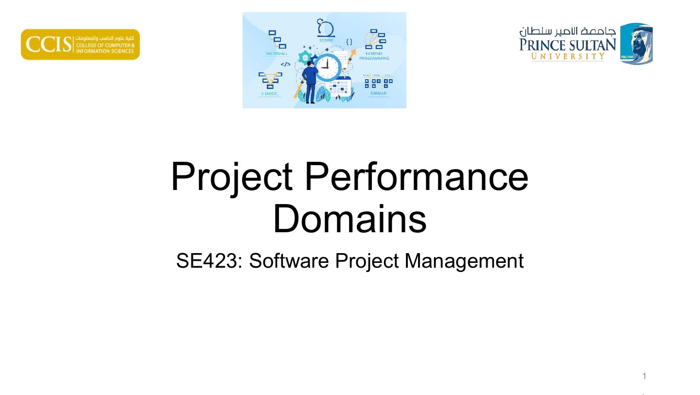
Chapter 1 listed the 8 domain names; this deck opens each one in turn. The number badge (1–8) on each domain’s title slide keeps the order: stakeholders, team, development approach and life cycle, planning, project work, delivery, measurement, uncertainty.
For each domain learn its purpose, its key terms (many are examined as definitions), and one or two practices you could describe in a scenario answer.
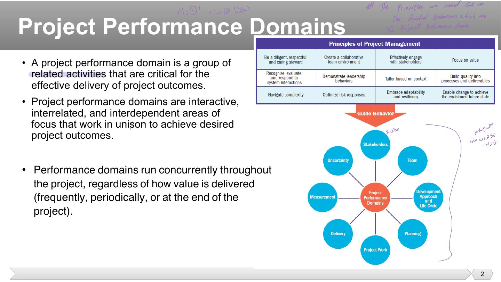
Think of a domain as one area a PM must keep an eye on, such as “are the stakeholders on board?”. It is a group of related activities rather than a single task, and it is critical because neglecting it damages the outcome, whatever else goes well.
Interdependent means a problem in one area spreads. If nobody engages stakeholders, requirements come in wrong, so planning is built on bad information and delivery gets rejected. That’s why the domains are interactive, interrelated and interdependent rather than separate checklists.
You never “finish” a domain and move on. On the last day of a project you are still managing stakeholders, measuring and handling uncertainty. So they run concurrently whether you ship weekly or once at the end. They are not phases done in order, which is exactly the trap in the real MCQ.
Which of the following best explains the nature of project performance domains?
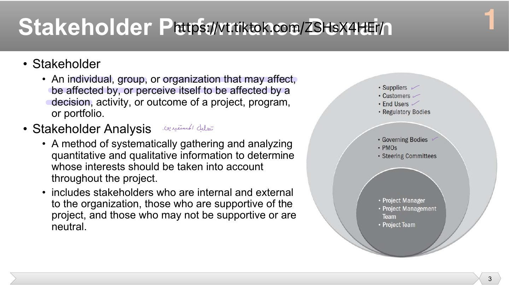
The definition is deliberately broad. A neighbor annoyed by construction noise is a stakeholder, even with no role in the project. So is someone who only believes the project will take their job: perceive itself to be affected counts, because their reaction can still affect you.
You can’t give everyone equal attention, so stakeholder analysis works out who matters and how. Numbers such as budget influence, plus judgment such as attitude toward the project, tell you whose interests to take into account first.
Teams tend to list only friendly people inside the company. Include people internal and external, and especially those who oppose the project: a regulator or an unhappy department can block you late, when change is most expensive.
Edugate scheduling system: identify three main stakeholder groups for this project, describe their roles, and explain how their input will shape the system.
Students are the end users; their input shapes usability and flexibility (0.3). The IT/Edugate team ensures integration, security and compliance with PSU IT policies (0.3). Faculty advisors and administration ensure study-plan rules are enforced and use the system to monitor students (0.4).
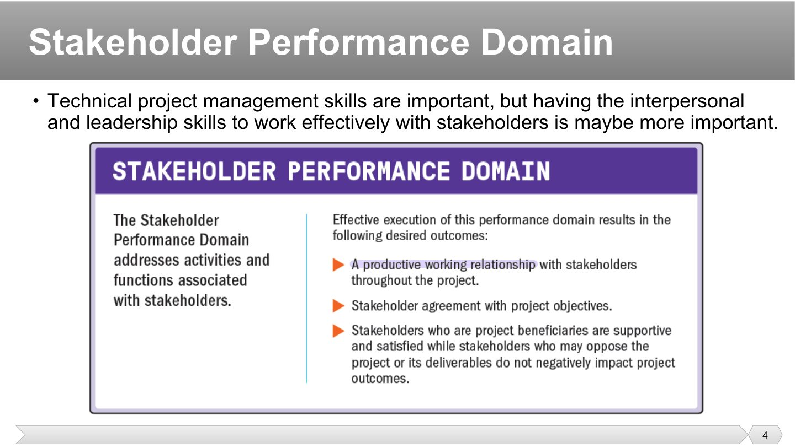
Technical PM skills matter, but interpersonal and leadership skills for working with stakeholders may matter more. Most stakeholder problems (resistance, conflicting expectations) are solved by listening, negotiating and building trust, not by a better Gantt chart. The circles diagram groups stakeholders from the core team outward to customers, end users and regulators.
A PM has a flawless schedule, but a key department keeps blocking the project. What does the slide suggest is most needed?
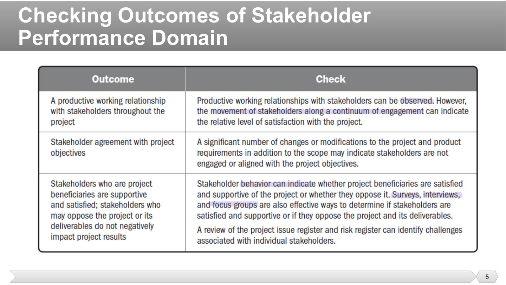
The “checking outcomes” table: the left column is what success looks like for the domain, the right column is the evidence that it happened. You won’t be asked to reproduce it, but it is a good structure for a written answer about the domain. Here: a productive working relationship with stakeholders throughout, checked by observing it and by how stakeholders move along the engagement continuum (unaware → resistant → neutral → supportive → leading).
Stakeholder agreement with project objectives, checked by the number of changes: many scope modifications suggest stakeholders weren’t aligned.
Supportive beneficiaries and harmless opponents, checked with surveys, interviews and focus groups, and by reviewing the issue and risk registers.
Many scope changes keep arriving from stakeholders. According to the checking-outcomes table, what might this indicate?
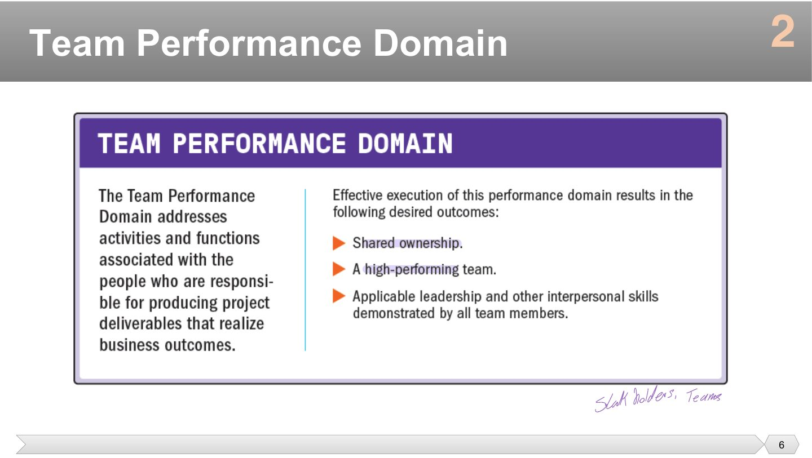
The team domain covers the activities and functions of the people who produce the project deliverables.
Desired outcomes: shared ownership of the work, a high-performing team, and leadership and interpersonal skills shown by all team members, not only the PM.
Which is a desired outcome of the Team performance domain?
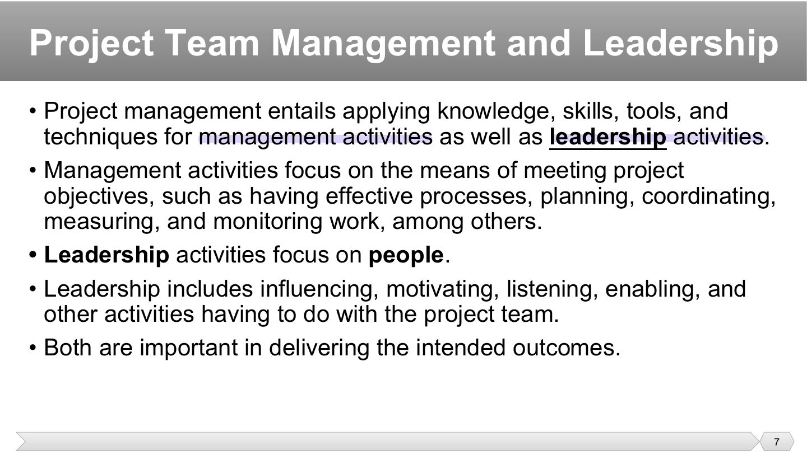
One person often does both jobs in the same meeting. Fixing the agenda and the timeline is management, while getting a discouraged tester back on board is leadership. A project needs both kinds of effort, so neither one replaces the other.
Management is about the machinery: are the plan, the tracking and the process working? A team can be happy and still miss the deadline if nobody manages the means.
Leadership is about whether people want to and can do the work. A perfect plan fails if the team doesn’t trust it. A quick way to remember it: manage things, lead people.
Influencing, motivating and listening to the team are examples of which kind of activity?
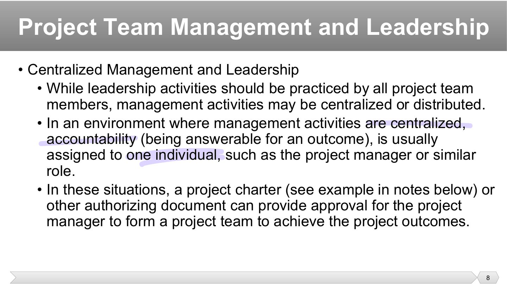
Anyone can show leadership, for example by helping a stuck teammate or raising a concern, without any title. Management is different, because someone has to be assigned tasks like budgets and reporting, and an organization can give them to one person or share them out.
Accountability means that when something goes wrong, there is a known person who has to answer for it. Centralizing it makes things clear: everyone knows who decides and who to escalate to.
Being named PM isn’t enough, since you need the right to spend money and pull people from other departments. The project charter is the document that formally gives that right, so nobody can later ask who authorized it.
On a project with centralized management, who usually carries accountability?
What gives a PM approval to form the team and use resources?
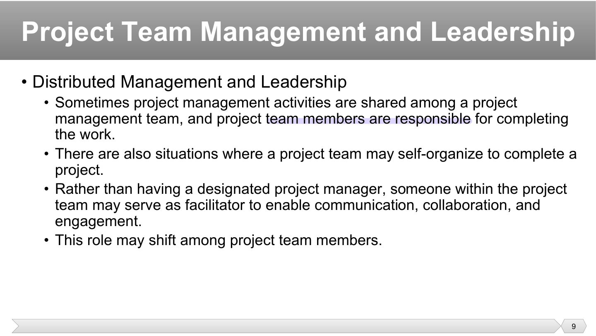
Here the PM’s tasks are split up, such as one person tracking budget and another handling risks, while the rest of the team builds. It suits teams that are experienced enough not to need one central decision-maker.
To self-organize means nobody assigns the work: the team decides among themselves who does what and how. It depends on a mature team, because it collapses if nobody takes responsibility.
A facilitator doesn’t give orders. They run the conversation and remove obstacles, as a Scrum master does. The role can shift because it isn’t a rank, so whoever suits the current stage can take it on.
A team has no designated PM. One member runs discussions this month, and another may next month. What is this person?
In distributed management, leadership is limited to the person who is the facilitator.
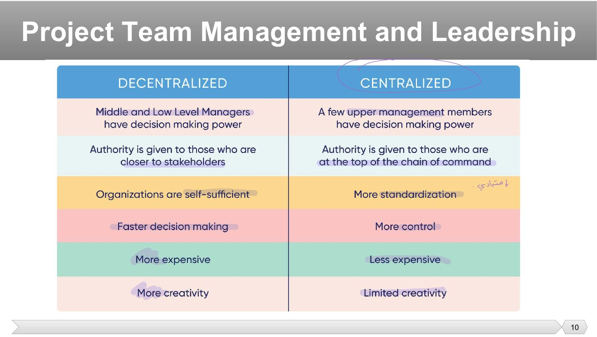
Decentralized: middle and lower-level managers have decision power, and authority goes to those closer to the stakeholders; units are self-sufficient.
Centralized: a few upper-management members decide, with authority at the top of the chain of command.
Decentralized gives faster decisions and more creativity but is more expensive (duplicated resources and skills in each unit).
Centralized gives more standardization and control and is less expensive, with limited creativity. Learn it as three opposite pairs: speed vs. control, more vs. less expensive, creativity vs. standardization.
In decentralized project management, decision-making authority is primarily:
Which is a characteristic of decentralized management, according to the table?
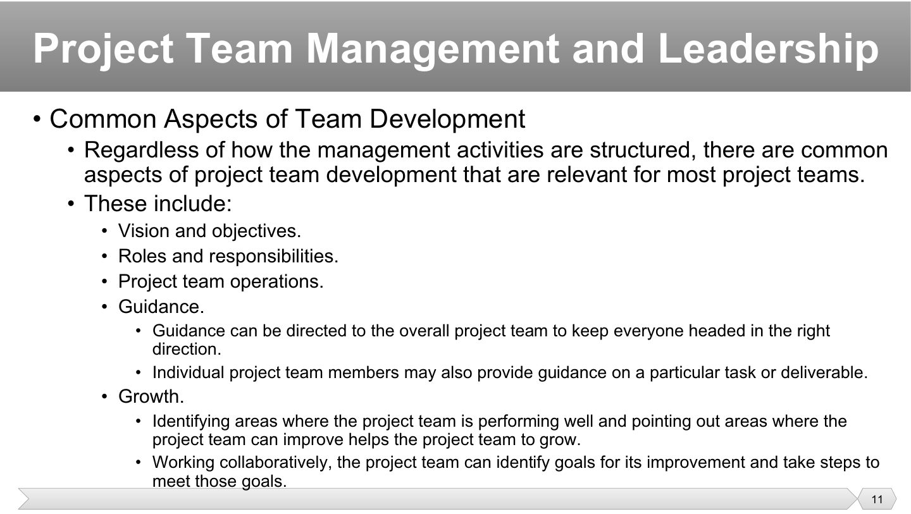
These come first because missing them causes problems no process can fix. If people disagree on the goal or on who owns what, you get duplicate work and gaps. Agreeing on team operations (how meetings, decisions and communication work) avoids daily friction.
Guidance isn’t only top-down. The PM keeps the whole team heading the same way, while the most experienced person on a task may guide others on it, such as the database expert advising on queries.
Growth needs honesty in both directions. Naming what works keeps it going, and naming what doesn’t gives the team something specific to improve. That’s what a retrospective does.
During a retrospective, the team notes what went well and sets goals to improve. Which aspect of team development is this?
Which is NOT one of the common aspects of team development?
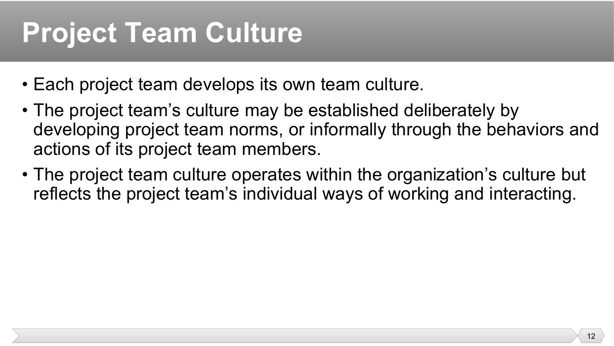
Put two teams in one company and they can still feel completely different, in how they argue, how fast they reply and whether they admit mistakes. A team’s own culture always forms, so the only question is whether anyone shapes it.
A culture built deliberately starts with agreed rules: “we review every pull request within a day.” If nobody agrees anything, culture forms informally from behavior, for example if the PM ignores late work, the team learns lateness is fine.
A team can’t ignore its company’s rules, so a bank’s project team still follows the bank’s compliance culture. Inside those limits, it can still set its own habits. Think of a family living under a country’s laws.
A team agrees that every pull request gets reviewed within a day. How has this part of its culture been established?
A project team’s culture operates independently of the organization’s culture.
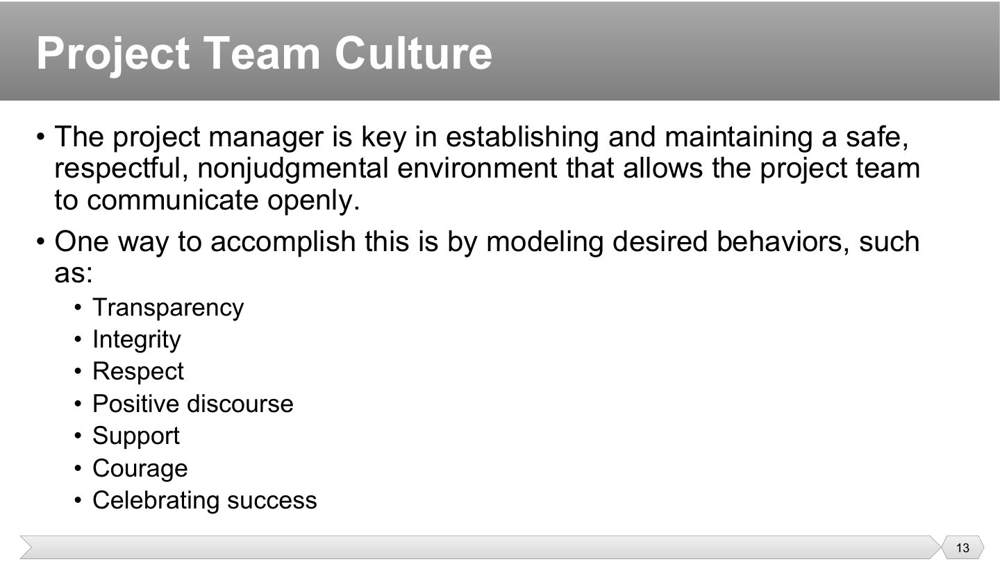
People hide bad news if speaking up gets them punished, and hidden problems are the expensive ones. A safe, respectful, nonjudgmental environment makes it normal to say “I’m stuck” early, and the PM is the one who sets that tone.
Teams copy what you do, not what you say. A PM who admits a mistake in a meeting teaches more than any poster about honesty. Courage matters most here, since it’s what gets problems raised before they grow.
Recognition tells people that their effort was noticed, which is a big part of why they keep giving it. Celebrating success can be small, like thanking someone in a review, and works best when it’s specific.
Your team has just completed a major milestone in the project development process. How would you celebrate this achievement collaboratively with your team members? How would you recognize individual contributions to the team’s success? What actions would you take to ensure that team morale remains high as you move forward in the project?
Celebrate as a team, e.g. a team lunch and an announcement of the milestone to the stakeholders. Recognize individuals specifically and publicly: name what each person contributed in the meeting, send thank-you notes to their managers, and give certificates or small rewards. Keep morale high with a retrospective that captures what went well, clear and achievable next goals, a balanced workload to avoid burnout, growth opportunities, and continued recognition, not only at milestones.
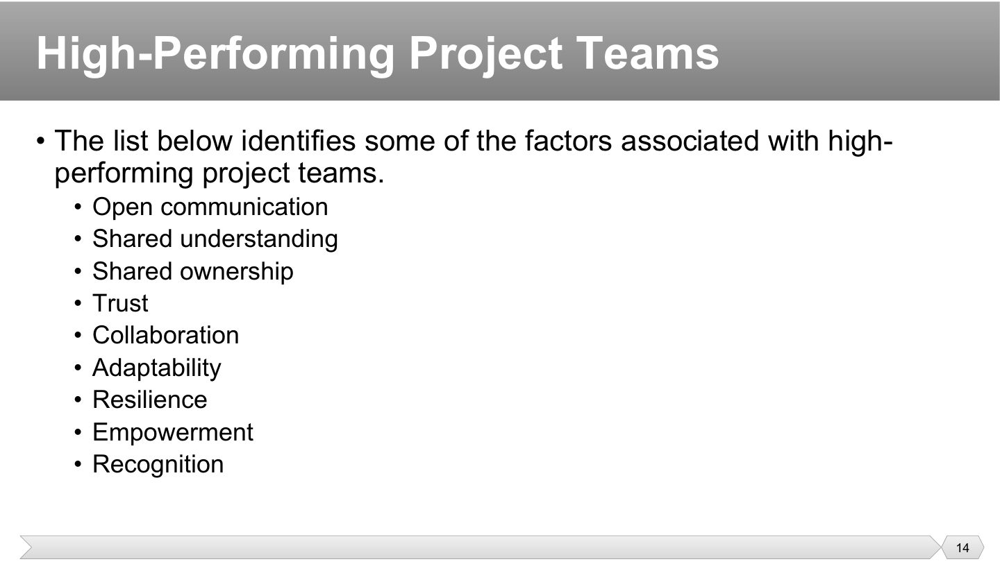
A team can’t work together toward something it pictures differently. Open communication surfaces problems, shared understanding means everyone pictures the same goal, and shared ownership means nobody says “that’s not my part” when something breaks.
Trust lets people ask for help without fear, and collaboration is what trust makes possible. Without them, people protect their own piece of the work and the pieces don’t fit together.
Projects never go as planned. Adaptability is changing course when a requirement changes, and resilience is recovering after a real setback, such as a failed release.
Empowerment means people can decide without waiting for approval, which speeds everything up. Recognition makes them want to keep doing it. Empowerment without recognition burns people out.
What are key characteristics of a good team?
A good team trusts each other enough to speak openly and admit mistakes, shares a clear goal with clear roles, debates ideas in healthy conflict, commits to decisions, holds each other accountable, and puts team results ahead of individual credit. (The slide’s factors: open communication, shared understanding and ownership, trust, collaboration, adaptability, resilience, empowerment, recognition.)
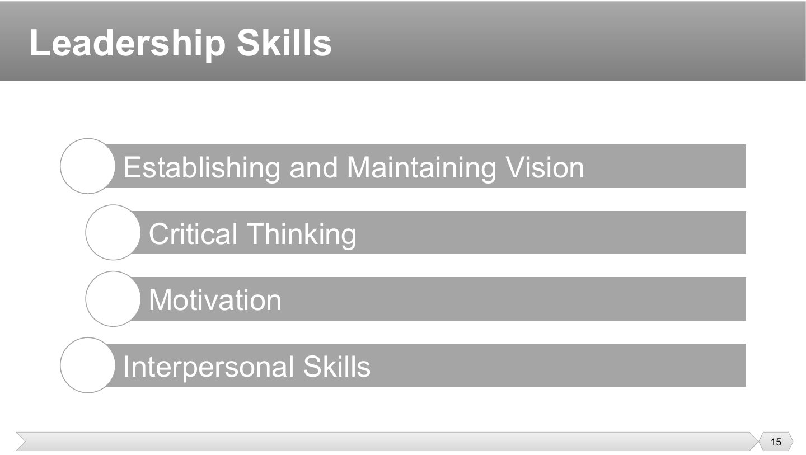
Vision: establish and maintain a shared picture of what the project is for, so decisions point the same way.
Critical thinking: weigh evidence, question assumptions and make sound judgments.
Motivation: understand what drives each person (intrinsic or extrinsic) and use it.
Interpersonal skills: emotional intelligence, decision-making and conflict resolution (next slide).
A PM weighs the evidence and questions assumptions before a decision. Which leadership skill is this?
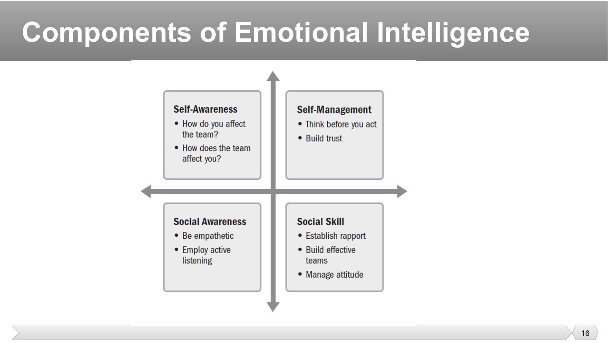
Emotional intelligence (EI) has four components: two about yourself, two about others. Self-awareness: how do you affect the team, and how does the team affect you?
Self-management: think before you act, build trust.
Social awareness: be empathetic, use active listening.
Social skill: establish rapport, build effective teams, manage attitude.
“Be empathetic” and “employ active listening” belong to which component of emotional intelligence?
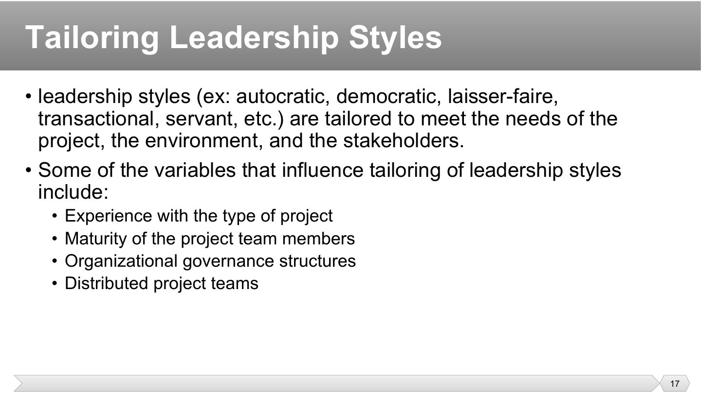
No style is always right, so the PM picks one that suits the situation. Autocratic can work in a crisis when a fast decision is needed, while servant leadership suits a skilled team that only needs obstacles removed. Using one fixed style is the mistake.
Each variable changes how much direction people need. A team new to this type of project needs more guidance. A mature team would resent it. Strict governance limits what you can leave to the team, and a distributed team needs more deliberate communication because nobody overhears anything.
How can a project manager balance technical leadership with adaptive leadership in a software team?
First diagnose the problem. When it can be solved by known means (a coding standard, an architecture choice the PM knows well), use technical leadership: give direction from expertise and vision. When it can’t (new technology, unclear requirements), use adaptive leadership: frame the purpose, ask questions, let the team experiment and learn, and motivate through visible progress. Switching between the two as the situation changes is the balance. (Also Midterm 251 V2 Short Q5.)
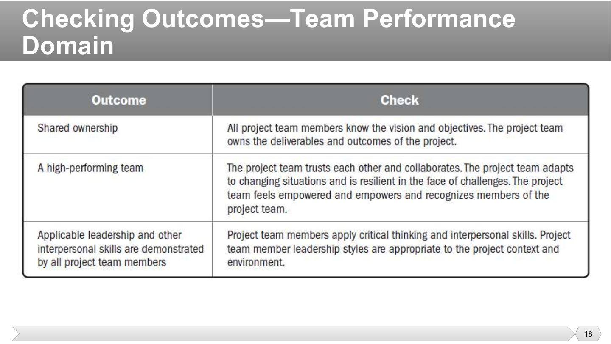
The “checking outcomes” table: the left column is what success looks like for the domain, the right column is the evidence that it happened. You won’t be asked to reproduce it, but it is a good structure for a written answer about the domain. Team: shared ownership (members are engaged and take initiative), a high-performing team (trust, collaboration, adapting to change) and leadership shown by all (evidenced by members’ interpersonal skills and initiative).
Which evidence best shows “shared ownership” on a team?
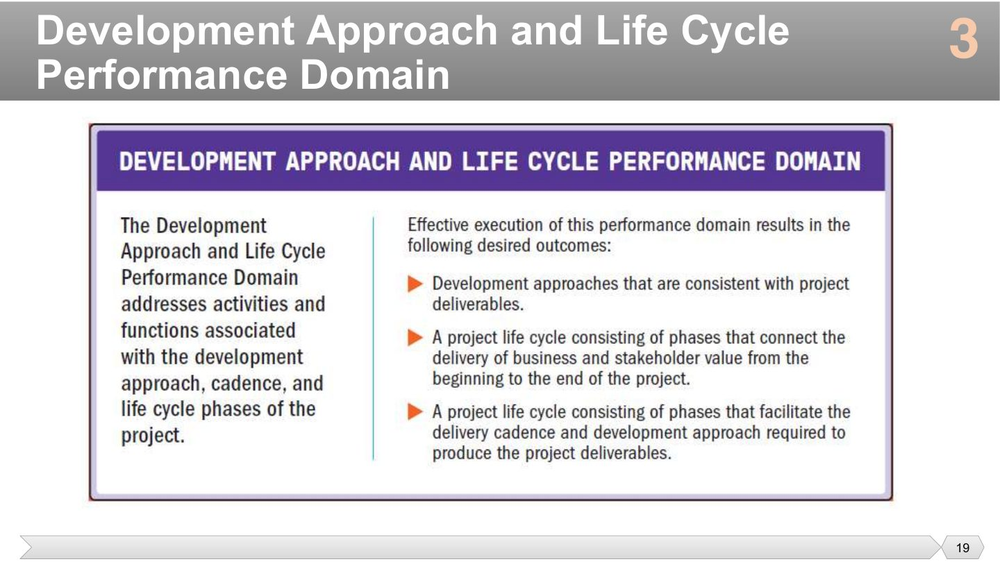
This domain answers three questions: how do we build it (development approach), how often do we deliver (cadence), and what stages do we go through (life-cycle phases)? The answers have to fit together.
The approach has to match what you’re building: you can’t construct a bridge in two-week releases. The phases then need to fit the rhythm you promised, so that value reaches people when expected. That’s what consistent with the deliverables means.
Which three things does this domain cover?
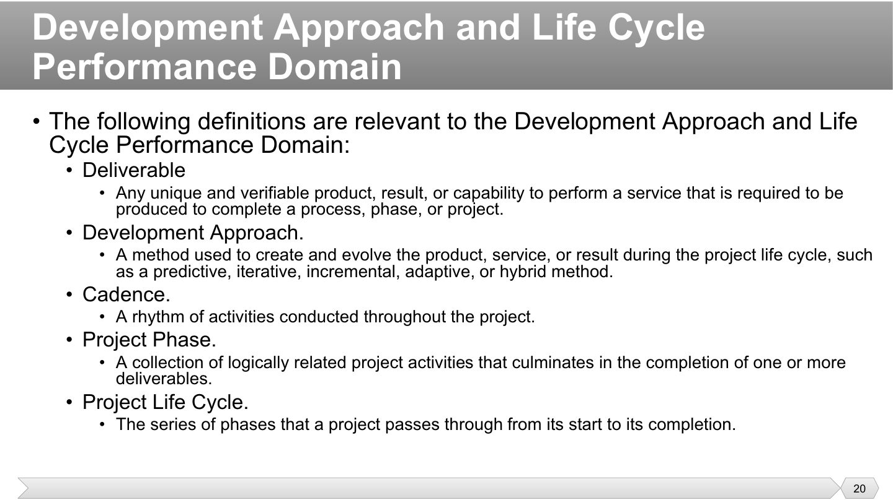
The test is in two words: unique (specific to this work) and verifiable (someone can check it exists and is correct). “A signed test report” is a deliverable. “Better teamwork” isn’t, since you can’t verify it.
This is the “how do we build it?” choice. Predictive plans everything first, while adaptive learns as it goes. Iterative and incremental are ways of working within those. Chapter 4 compares them in detail.
Cadence is a rhythm, like a heartbeat. When everyone knows a demo happens every second Thursday, they plan around it without needing extra coordination.
A phase is a chunk of work that ends with something to show, such as “design” ending in approved designs. The life cycle is all the phases in order, so a phase is a chapter and the life cycle is the book.
In project management, what is the primary purpose of establishing a project cadence?
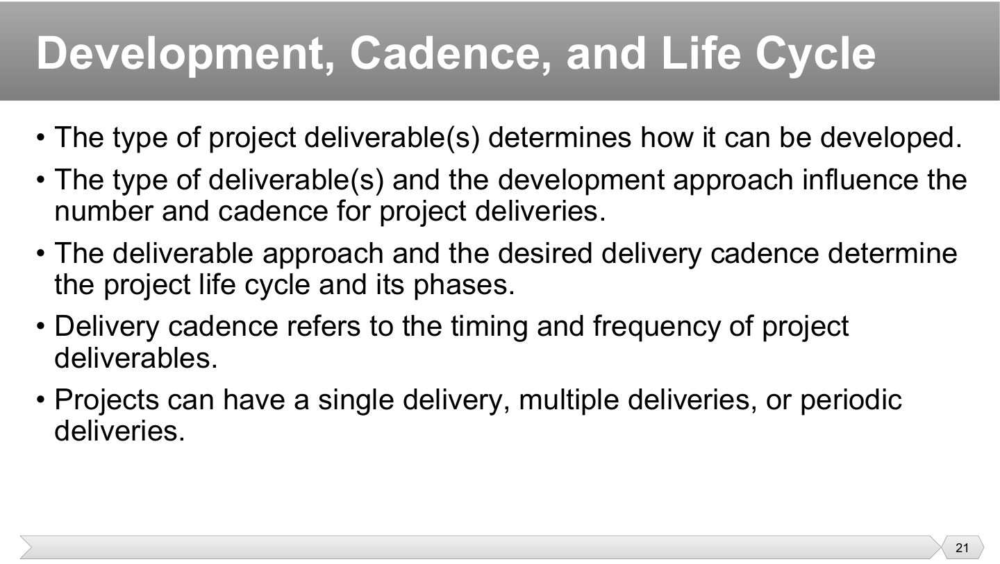
Everything flows from what you’re making. Software can be released in pieces, but half a bridge is useless. So the type of deliverable limits your options before anyone chooses a method.
Once the method is chosen, it affects how often you can ship. A physical product may ship once, while a website can ship weekly. Promises to the customer about cadence have to respect that.
This is the last link in the chain: deliverable → approach and cadence → life cycle. If you plan monthly releases, your phases have to repeat monthly. A single long “build” phase wouldn’t fit.
“When and how often does the customer receive something?” is all this means. Don’t confuse it with cadence in general, which covers any rhythm of activity, such as weekly meetings. Delivery cadence is specifically about deliveries.
Pick by what the customer needs. A single delivery fits a one-off building, multiple fit a system handed over in stages, and periodic fit something like monthly payroll updates. Earlier deliveries mean earlier value and earlier feedback.
What decides how a project’s deliverable can be developed?
A payroll system ships an update on the first of every month. Which delivery is this?
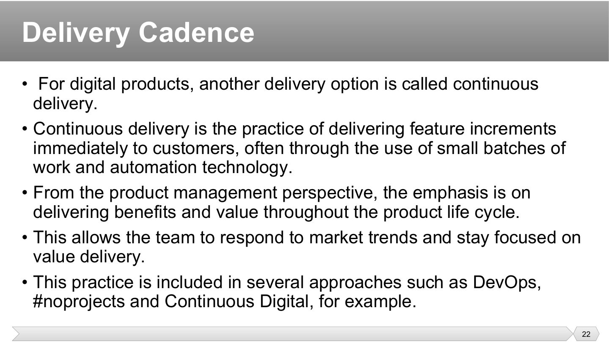
Think of apps that update without you noticing. Continuous delivery is only realistic for digital products, because you can’t ship a physical product’s improvements daily.
Why small batches? A small change is easy to test and easy to undo if it breaks something. Automation makes the frequent releasing cheap, because no person has to repeat the build and test steps each time.
A project mindset asks “did we finish?”, while a product mindset asks “is it still delivering value?”. With continuous delivery, the team can react to what the market wants this month, not what was planned last year.
You’ll see this practice again under DevOps in Chapter 4, where development and operations work as one team. #noprojects is the extreme view that you fund ongoing products rather than one-off projects.
A team ships small feature increments to customers immediately, using automation. What is this?
Continuous delivery is mainly an option for digital products.
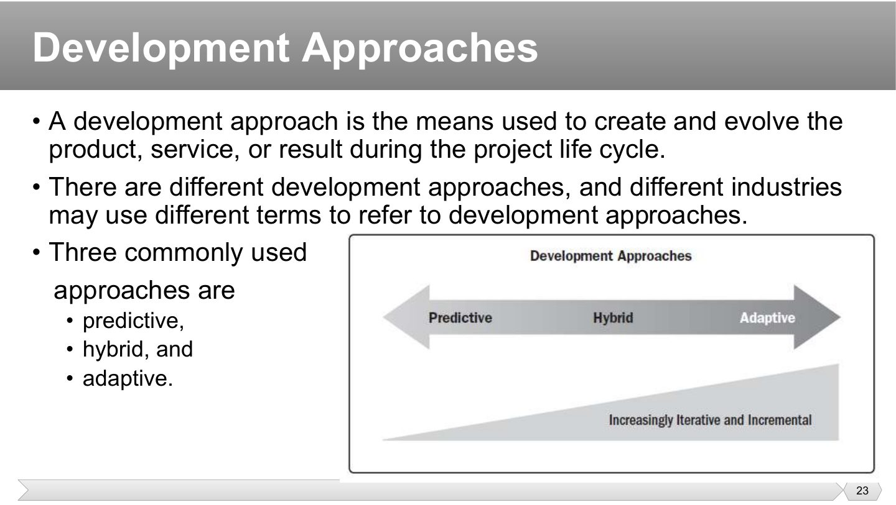
It’s the answer to “what way of working will we use to produce this?”. It isn’t the tools or the team. Waterfall and agile are examples of a development approach.
If an exam or company uses an unfamiliar name, look at how the work is done, not the label. One industry’s “stage-gate” may be another’s “waterfall”. Different industries use different terms, but the idea is the same.
The three common ones are predictive, hybrid and adaptive, a spectrum rather than three boxes: the further toward adaptive, the more iterative and incremental the work.
Which statement about development approaches is correct?
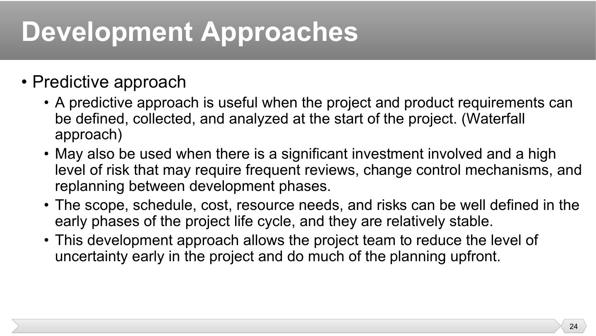
Predictive bets that you can know what’s needed before you start, such as a building with approved blueprints. It works when requirements won’t move much. It’s also called waterfall because each stage flows into the next.
The second reason is about stakes, not certainty. When a mistake is very costly, like a hospital information system, you want formal checks before spending the next large sum. Heavy reviews would slow a small app down, but here they’re protection.
Knowing these early is what makes predictive possible, because you can commit to a price and date up front. If they keep changing, those commitments keep breaking, and that’s the sign you chose the wrong approach.
It tries to remove uncertainty before building starts, so most planning happens up front. The cost is that late changes are expensive, as you’d be undoing finished work.
A government payroll system must implement fixed legal rules that will not change during the project. Which development approach fits, and why?
Predictive (waterfall): the requirements can be defined and analysed at the start and are stable, so scope, schedule and cost can be planned up front with phase reviews and change control.
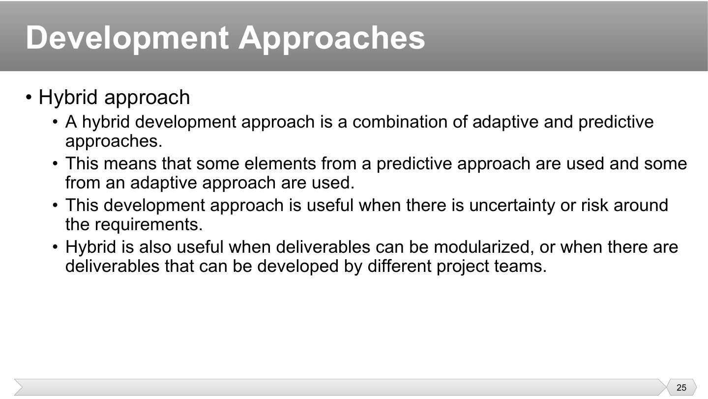
Hybrid is about mixing, not compromising. You use the predictive way where things are stable and the adaptive way where they aren’t, in the same project.
It’s useful when you’re sure about some parts and not others. A payment system’s rules may be fixed by law, while its user interface needs trying out with real users. Using one approach for both would be wrong for one of them.
Pieces that can be built separately can be run differently. Modularized means the parts connect but don’t depend on each other’s way of working, like a fixed back-end integration planned predictively with a user-facing app built in sprints.
Edugate scheduling system: given the evolving requirements (student usability, advisor requests, IT integration rules), which development approach (Agile, Waterfall, or Hybrid) would you recommend, and why would it be the best fit for this project?
Agile (Scrum) (0.5), because it handles the evolving requirements from students, advisors and IT, delivers iteratively so each sprint gets feedback, and integrates with DevOps pipelines for frequent tested releases (0.5). (A hybrid answer that plans the fixed IT integration predictively and builds the student-facing features iteratively is also well argued.) The instructor’s key gives Agile (Scrum).
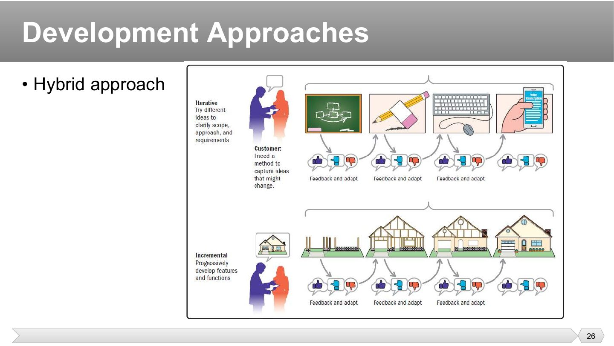
Iterative (top row): try different ideas to clarify scope, approach and requirements, refining the same thing after each round of feedback (sketch → mock-up → prototype → app). The customer needs a way to capture ideas that might change.
Incremental (bottom row): progressively add new features and functions, each a working piece (foundation → frame → walls → finished house), with feedback after each increment. Adaptive approaches use both. Iterative refines; incremental adds.
Adding one new working feature to the product in each cycle is best described as:
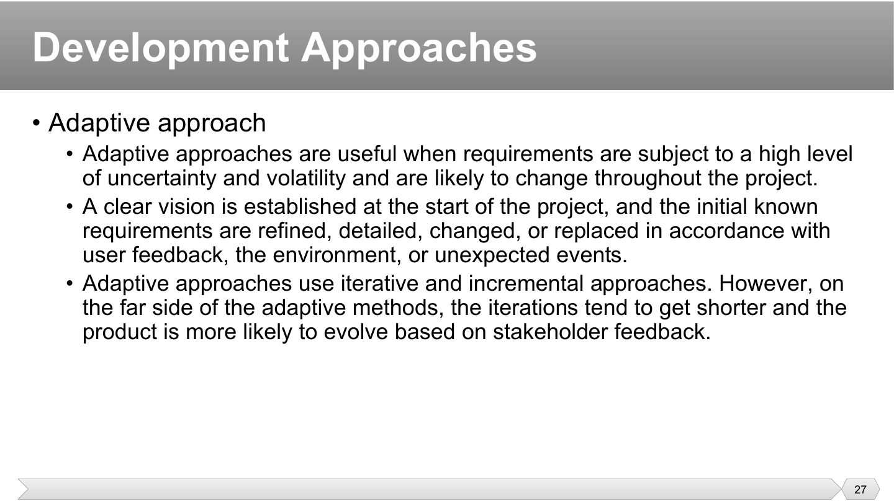
Adaptive assumes that you can’t know everything up front, so it doesn’t pretend to. It suits new products, where users themselves don’t yet know what they want until they try something.
Not knowing the details doesn’t mean having no direction. The clear vision is the fixed point, like “students can register online in under a minute”. The features that achieve it can change as you learn from user feedback.
Adaptive work repeats (iterative) and grows (incremental). The further toward the adaptive end, the shorter each cycle gets, since shorter cycles mean faster correction when you’re wrong.
In which type of project would an iterative development approach be most beneficial?
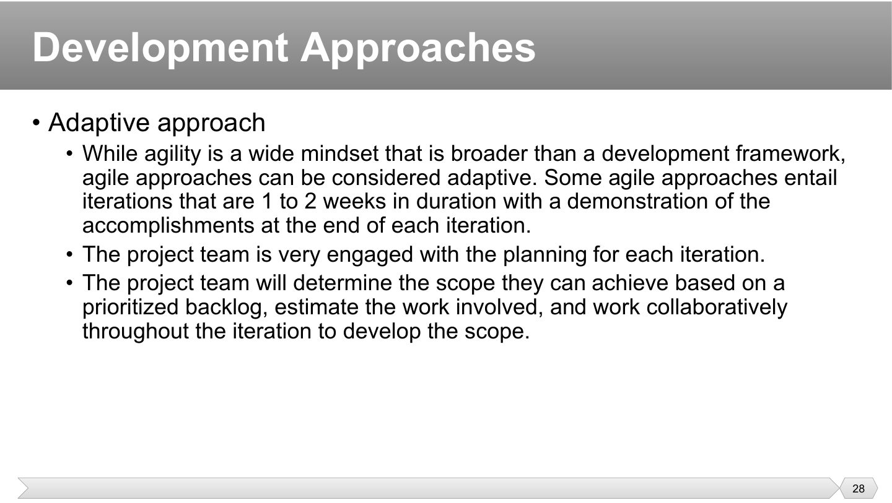
A framework is a set of steps, while agility is an attitude of responding to change. A team can follow every Scrum ritual and still not be agile. The 1–2 week iterations ending in a demo force real progress to be shown often.
People commit more to plans they helped make, and they know the real effort better than anyone else. That’s why the team plans each iteration in agile, rather than receiving a plan from above.
Because the backlog is prioritized, the most valuable work comes first and whatever doesn’t fit is the least important. If time runs out, you lose the least. The team sets the amount it takes on, which makes its promise realistic.
Who determines the scope for an agile iteration?
Agility is simply another name for the Scrum framework.
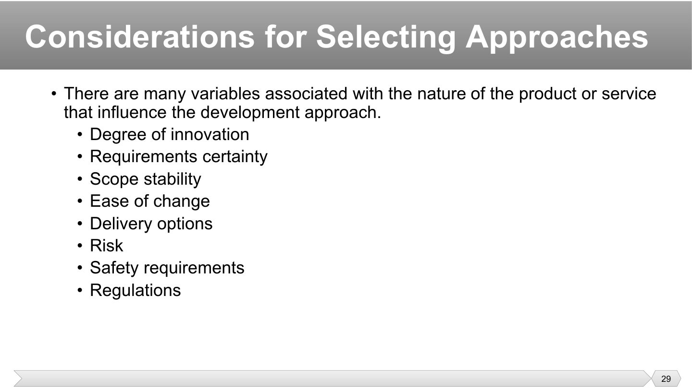
The common thread is how much you can know in advance and how cheaply you can change. New ideas, unclear requirements and easy changes all favor learning as you go, like a mobile app. Rule of thumb: high innovation, uncertain requirements, unstable scope, easy change and frequent delivery options push toward adaptive.
Strict safety requirements and regulations push toward predictive (they need documented, controlled phases).
A medical device must meet strict safety regulations and its requirements are stable. Which way do these product variables push the development approach?
Toward predictive: strict safety requirements and regulation, plus certain and stable requirements, favour up-front planning, documented phases and phase-gate reviews.
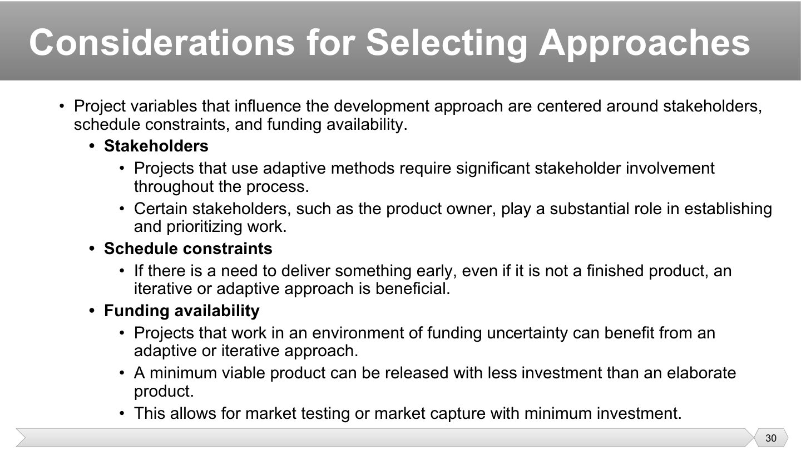
The product isn’t the only factor. Even for the same product, the approach can change depending on who’s involved, how soon something is needed and how the money arrives. These are the three project variables to name: stakeholders, schedule constraints and funding availability.
Adaptive only works if someone is available to answer questions and give feedback every week. A busy customer who only wants to see the final result is a warning sign. A product owner fills this role by deciding what comes next.
Imagine needing to show something at a trade fair in six weeks while the full product takes a year. Delivering something usable early only works when the work is split into cycles, which a single big delivery can’t give you.
If next quarter’s money isn’t certain, a big plan risks being stopped halfway, with nothing usable. Working in cycles means there’s always something finished, so you lose less if funding stops…
…and there’s a further benefit: an MVP is the smallest version worth releasing. Releasing it tests the idea cheaply, and if the market responds well, that success can help secure more funding.
An adaptive project has a busy client who won’t attend reviews. What concern does the slide raise?
Funding for next year is uncertain. Which approach does the slide favor, and why?
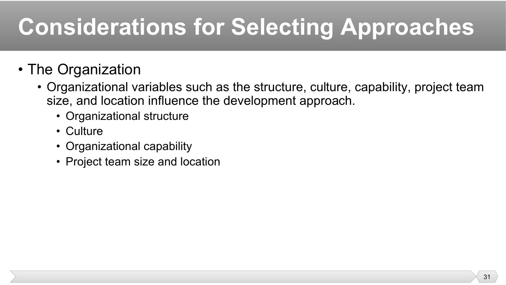
Even if the product suits an approach, the organization has to be able to run it. Skills, habits and how the company is arranged can all make an approach fail, so structure, culture, capability, team size and location all count.
A strongly hierarchical, documentation-heavy culture struggles with adaptive work; a small co-located team adopts it easily; large or distributed teams need more structure.
Which is an organizational variable that influences the development approach?
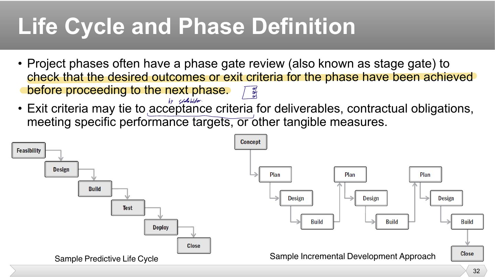
A phase gate stops a project from rolling on by momentum. Before spending on the next phase, someone asks “did we actually get what this phase was meant to produce?”. If not, you fix it or stop, which is cheaper than finding out later.
Exit criteria have to be checkable, or the gate means nothing. “Design is mostly done” can’t be verified, while “all designs are approved and 95% of test cases pass” can, and that’s why they’re tied to acceptance criteria or contract terms.
The diagrams: a predictive life cycle (feasibility → design → build → test → deploy → close, one phase after another) and an incremental one (plan → design → build repeated, each round delivering an increment).
What is checked at a phase gate?
Exit criteria can be tied to contractual obligations.
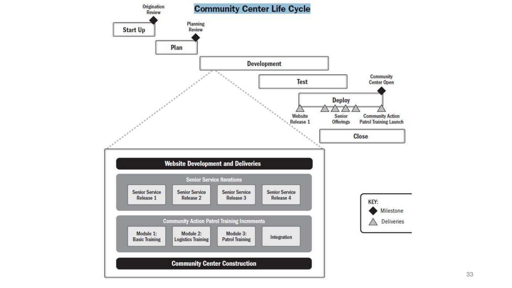
A real hybrid example. The community center building follows predictive phases with milestone reviews: start up → plan → development → test → deploy → close.
Inside development, the website is delivered in iterations (senior service releases 1–4) and the training (community action patrol modules 1–3 and integration) in increments, while construction proceeds predictively. One project, different approaches for different deliverables.
In the community center example, why is this a hybrid project?
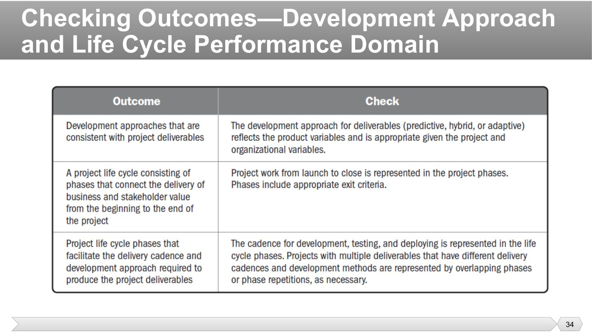
The “checking outcomes” table: the left column is what success looks like for the domain, the right column is the evidence that it happened. You won’t be asked to reproduce it, but it is a good structure for a written answer about the domain. Development approach and life cycle: approaches consistent with the deliverables (an approach that suits each product), a life cycle that delivers value from start to end, and phases that support the delivery cadence.
In this domain, what does an appropriate approach need to be consistent with?
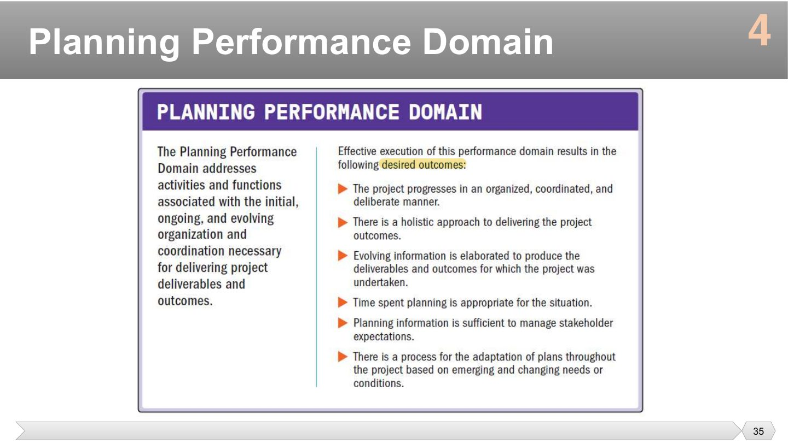
The planning domain covers the initial, ongoing and evolving organization and coordination needed to deliver the deliverables and outcomes.
Desired outcomes: the project progresses in an organized, coordinated way; a holistic approach to delivery; evolving information elaborated over time; planning time appropriate for the situation (not over-planning); enough information to manage stakeholder expectations; and a process to adapt plans as needs change.
Which is a desired outcome of the Planning domain?
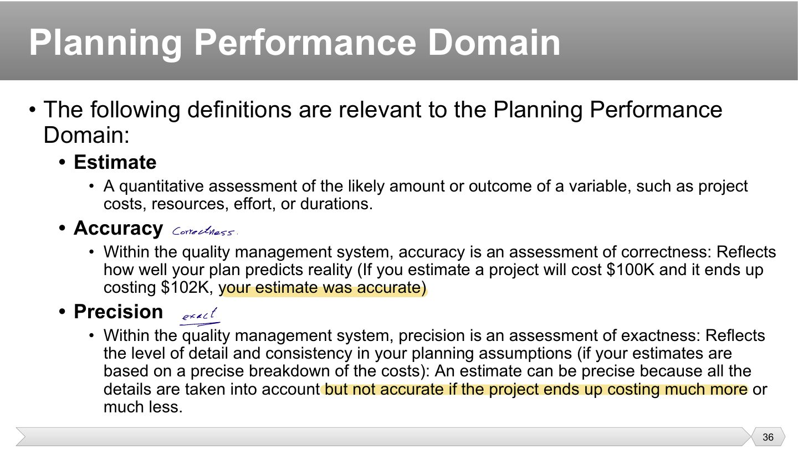
An estimate is an informed number, not a promise or a guess, and it should come with a basis. “About 40 days, based on two similar projects” can be challenged and improved, while “it’ll take a while” can’t.
Accuracy asks one question: was it right? Estimate $100K, actual $102K → accurate, because the estimate landed close to reality, however rough it was.
Precision = exactness: how detailed and consistent the estimate is. A precise estimate (every cost broken down) can still be inaccurate if the project ends up costing much more. Accurate = hits the target; precise = tightly grouped.
An estimate built from a detailed, line-by-line cost breakdown ends up 40% over the actual cost. The estimate was:
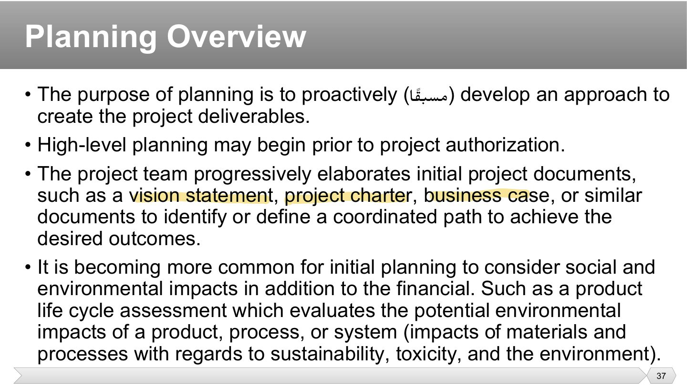
Proactively is the key word. Planning means deciding before problems force you to, as it’s far cheaper to choose an approach now than to change course mid-build.
It sounds backwards to plan before approval, but someone must estimate cost and benefit so leaders can decide whether to authorize it at all. That’s why high-level planning comes first, in the business case.
Progressively elaborates means adding detail as you learn, rather than guessing everything on day one. A vision statement becomes a charter, then a detailed plan, each more specific because more is now known.
A project can be profitable and still cause harm, like a product that’s hard to dispose of. Considering social and environmental impact early is cheaper than fixing it later, and customers and regulators increasingly expect it.
Why might planning begin before a project is authorized?
A vision statement is expanded into a charter, and then a detailed plan. What is this?
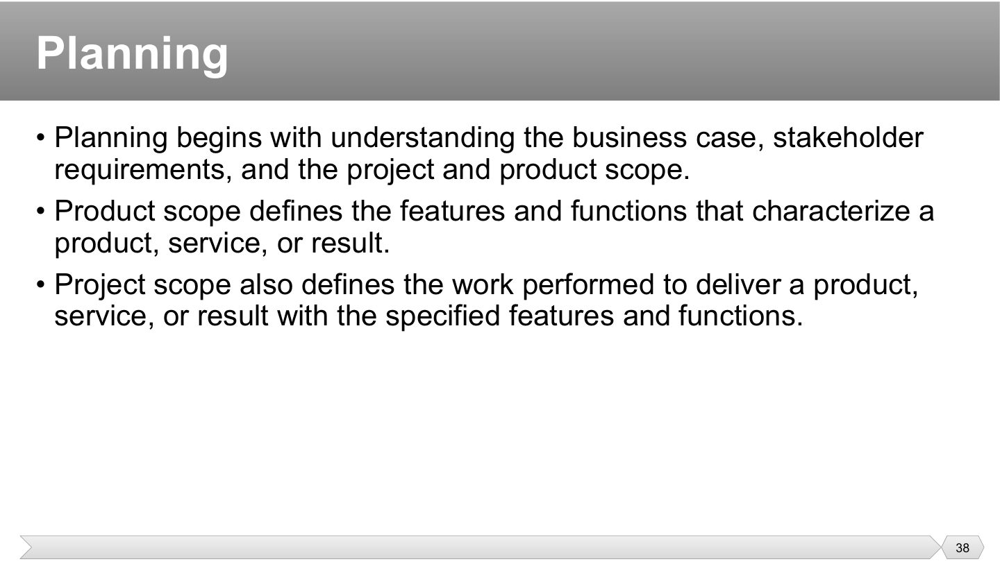
You can’t plan a route without knowing the destination. The business case says why we’re doing this, requirements say what people need, and scope says what’s included. Skipping these means planning the wrong thing very well.
Ask: “what will the finished thing have?” For a banking app, login, transfers and statements are product scope. It describes the result, and says nothing about how the team gets there.
Project scope: the work performed to deliver it (what the team must do). Don’t swap them; near-identical terms are the instructor’s favourite trap.
Describe the significance of a project scope statement in project management and elaborate on how it aids in mitigating project risks and ensuring successful project outcomes.
The scope statement defines what the project will and won’t deliver: objectives, deliverables, acceptance criteria, exclusions, assumptions and constraints. It reduces risk because everyone agrees on the boundaries up front, it’s the baseline for change control (so scope creep is caught and evaluated rather than absorbed), and it’s the basis for the WBS, estimates and schedule. That leads to realistic plans and a result the stakeholders will accept.
“The work performed to deliver a product, service, or result with the specified features and functions” defines:
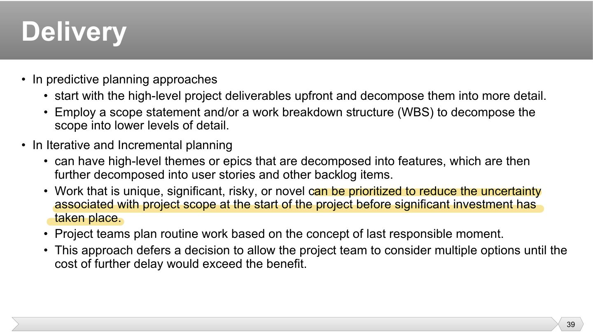
If you know what you need, you can break it down from the top. The WBS is like an outline: a building becomes floors, floors become rooms, rooms become tasks. Small pieces are what you can estimate and assign.
Here the breakdown happens gradually. An epic like “online payments” is split into features, then user stories like “as a customer, I can save my card”. Only the near-term items get broken down, as later ones may change.
If something might fail, you want to find out early and cheaply. Doing the risky or novel work first means that if the new technology won’t work, you learn it before you’ve spent most of the budget.
Deciding too early means deciding with less information. Last responsible moment means waiting until just before further delay would start costing more, like booking a venue only once the date is certain, but before they sell out.
Deferring a decision until the cost of further delay would exceed the benefit of waiting is called:
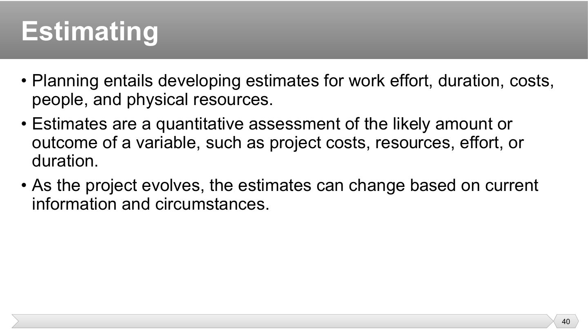
You need these numbers to answer “can we afford this, and when will it finish?”. Each one feeds something else: effort and people give duration, and duration and rates give cost.
Quantitative means a number you can use and compare, such as 40 days or $5,000. Saying “it’s a big task” doesn’t let anyone plan.
An early estimate is rough because you know little, so expecting it to hold is unrealistic. Estimates change as you learn, and updating them is good practice, not failure (the “cone of uncertainty” in Chapter 6).
To plan accurately for the design, prototyping, and testing phases, you need to estimate the time and effort required. Choose two effort estimation techniques you would apply to this project. Explain how each technique supports better planning and risk control in this scenario.
Three-point (PERT) estimation: each design, prototyping and test activity gets optimistic, most-likely and pessimistic values, (O + 4M + P) / 6, so the plan reflects the uncertainty of hardware prototyping and the spread shows where contingency is needed. Delphi / expert judgment: hardware and software experts estimate anonymously and converge over rounds, which brings in experience with regulatory testing and removes single-person bias. Comparing the two estimates cross-checks them and exposes risky tasks early. Chapter 6 teaches the techniques.
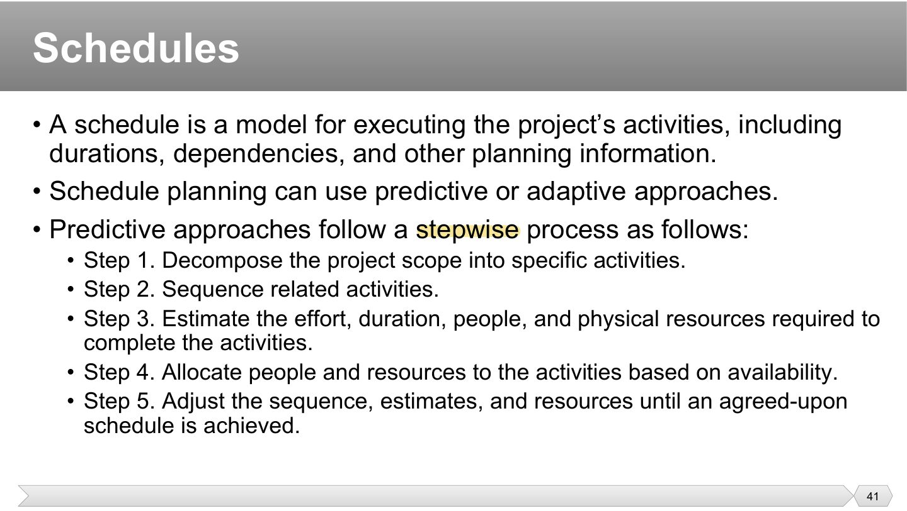
A schedule is called a model because it’s a simulation of how the work should unfold. Change one duration and you can see what moves. It isn’t just a list of dates.
The schedule isn’t always a fixed sequence of dates. Predictive fixes the plan up front, while adaptive plans in short cycles and adjusts. Which one you use follows from your development approach.
Each step needs the one before. You can’t order activities you haven’t listed, you can’t estimate resources before knowing what they do, and you can’t allocate people without estimates. Decompose → sequence → estimate → allocate → adjust.
As the project manager, you must ensure that the 12-month development timeline is realistic and achievable. Identify three project scheduling methods/techniques you would use to plan the sequence and timing of tasks. Briefly explain how each method helps in identifying delays or managing overlapping activities.
1) Network diagram + Critical Path Method: shows dependencies and the longest path; any delay on a zero-slack critical activity delays the whole project, while slack shows how much other tasks can slip. 2) Gantt chart: shows each task on a timeline, so overlapping activities, resource clashes and slipping bars (actual vs planned) are easy to spot. 3) PERT: uses optimistic, most-likely and pessimistic durations ((O + 4M + P) / 6), useful for uncertain design, prototyping and regulatory work, so likely delays are built in. Chapter 6.2 covers these techniques.
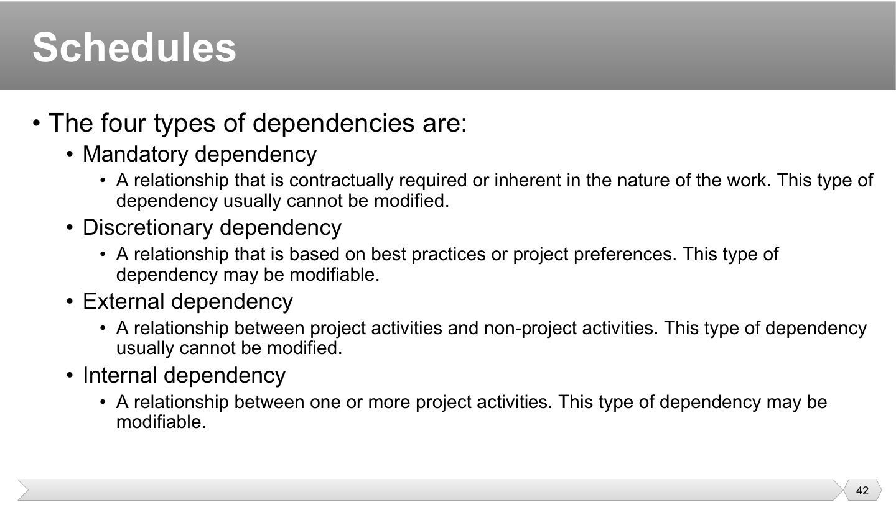
A contract or physical reality forces this order, as you can’t test code before it’s written. Mandatory is what you check first when trying to shorten a schedule, because this kind cannot be rearranged.
This is the team’s choice, like “finish the design review before coding”. It’s a good habit but not a law, so discretionary links are what you relax when fast-tracking. Doing so adds risk.
You’re waiting on someone outside the project, like a government permit or a vendor’s delivery. External links are out of your control, so all you can do is plan around them and monitor them.
Both activities belong to your project, such as “finish the API before the app connects to it”. Since it’s all in the team’s hands, an internal link can often be reorganized.
Waiting for a government permit before construction can begin is which type of dependency?
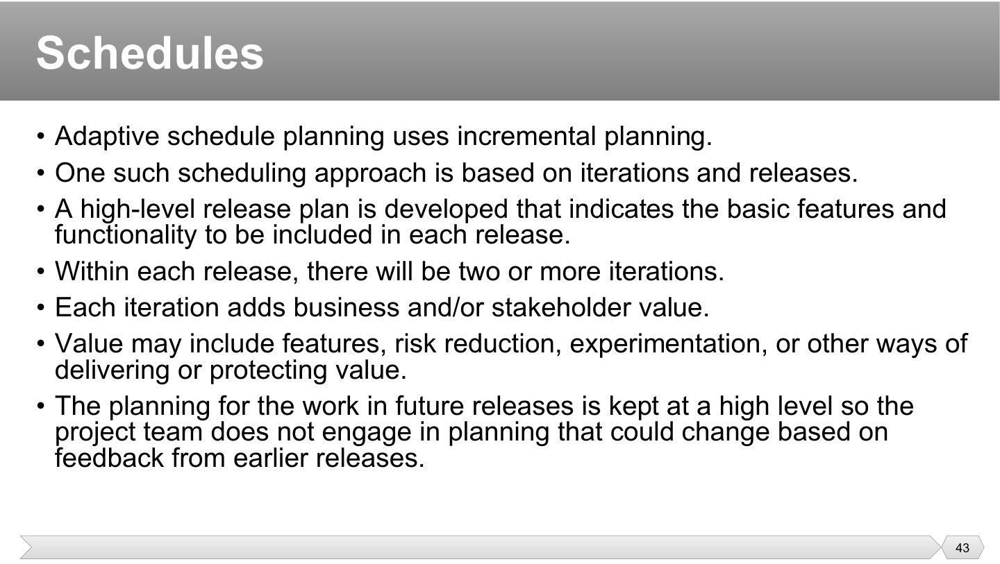
Instead of scheduling every task for a year, you plan in layers: rough for later, detailed for soon. Incremental planning avoids carefully scheduling work that will have changed by the time you reach it.
A release plan is a commitment about what customers will get and roughly when, like “Release 1: login and profiles”. It gives stakeholders something to plan around without detailing every task.
Iterations break a release into short steps, so there’s a working check on progress every few weeks, well before the release date. Each is a chance to correct course.
Value doesn’t just mean new features. An iteration spent proving a risky technology works, or running an experiment, protects the project. So risk reduction counts too, even with nothing new on the screen.
Detailed plans for next year are wasted effort, as feedback from this release will change them. Keeping future releases high level saves that work and keeps the team free to act on what it learns.
Why are future releases kept high level in adaptive schedule planning?
In adaptive planning, each iteration must add a new visible feature to count as value.
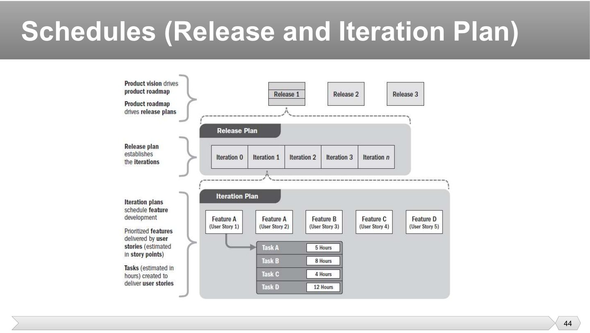
Reading the diagram as zoom levels: the product vision drives the roadmap, the roadmap drives the release plans (Releases 1–3), and each release plan sets its iterations (0…n).
Each iteration plan schedules features delivered as user stories, estimated in story points.
Stories are broken into tasks estimated in hours (Task A 5 h, B 8 h…), the most detailed level, planned only for the current iteration.
Which is the most detailed level in the release and iteration plan diagram?
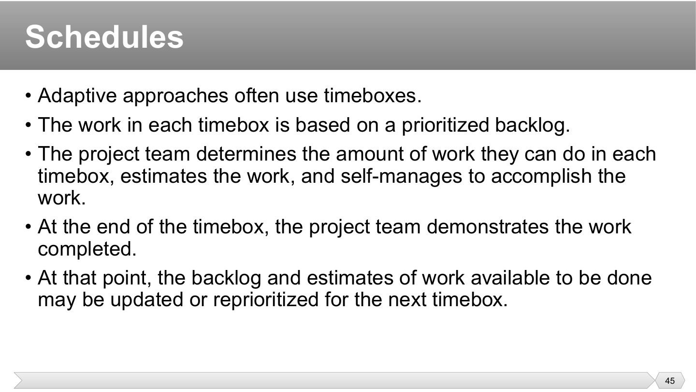
A timebox flips the usual approach. Normally scope is fixed and time slips. Here time is fixed and scope flexes, so whatever’s finished at the end is delivered. A sprint is the common example.
A prioritized backlog ensures the team takes the most valuable items first. If something doesn’t fit, it’s the least important thing that waits.
People doing the work know best how long it takes, and they commit more firmly to their own estimates. Self-managing also saves everyone from waiting for instructions.
A demonstration makes progress impossible to fake. “90% done” can mean anything, while working software in front of stakeholders can’t, and they often spot misunderstandings right away.
This is where learning turns into action: what stakeholders just saw can change what’s most valuable next. Reprioritizing every timebox is why this approach handles change well.
What stays fixed in a timebox?
What happens at the end of a timebox?
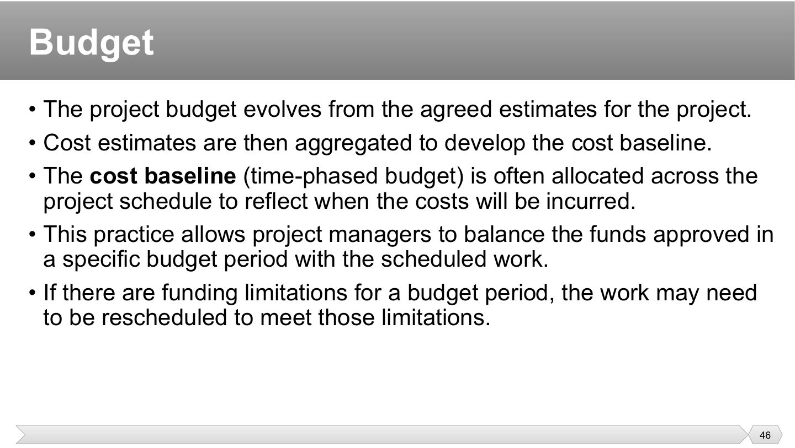
A budget isn’t an arbitrary figure handed down. It starts from what the work is estimated to cost, and it has to be agreed on, because those people will be held to it.
Aggregate just means adding up. Task costs roll up into work packages and then the whole project, and the total becomes the cost baseline you measure against.
Knowing the total isn’t enough, because you also need to know when the cash is needed. Time-phased means spread across the schedule: little in month one, then a big spike when equipment is purchased.
Finance often releases money by quarter or year. Balancing the funds means checking that the work you’ve scheduled for a period doesn’t cost more than that period’s approved money.
If only $50K is available in Q1 but the plan needs $80K there, something has to move. Rescheduling shifts work to Q2, which may delay the project. That’s why funding limits affect the schedule as well as the money.
What is a time-phased budget?
Only $50K is available this quarter, but scheduled work costs $80K. What does the slide say may happen?
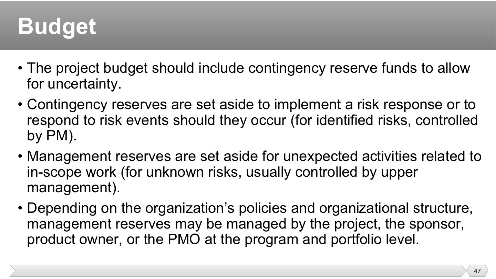
Every project has things that can go wrong and cost money. A budget with no contingency reserve assumes nothing will, which isn’t realistic, and the first surprise puts you over budget.
You know this risk exists, you just don’t know whether it will happen, like a key supplier being late. Because it’s identified, the PM can use this money without going up the chain. Think “known unknowns”.
This is for things nobody saw coming, like a sudden new regulation. Since it can’t be tied to a planned risk, upper management controls it, and the PM has to ask for it. Think “unknown unknowns”.
Who holds the money depends on how much control the organization wants, so the PMO or sponsor may hold it. What counts for exams is that it sits outside the PM’s normal control.
A reserve for unknown, unplanned in-scope work, usually controlled by upper management, is the:
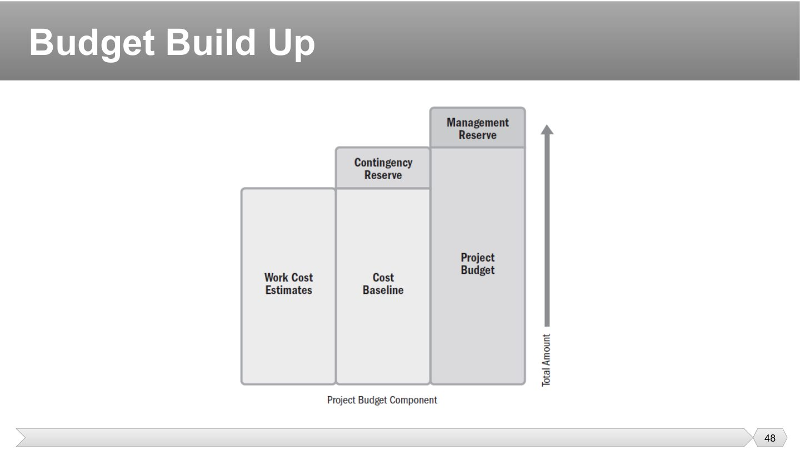
Build the budget bottom-up: work cost estimates come first.
Add the contingency reserve → the cost baseline (what the PM manages against).
Add the management reserve → the total project budget. So contingency is inside the baseline; management reserve is outside it.
Which amount is included in the cost baseline but not in the management reserve?
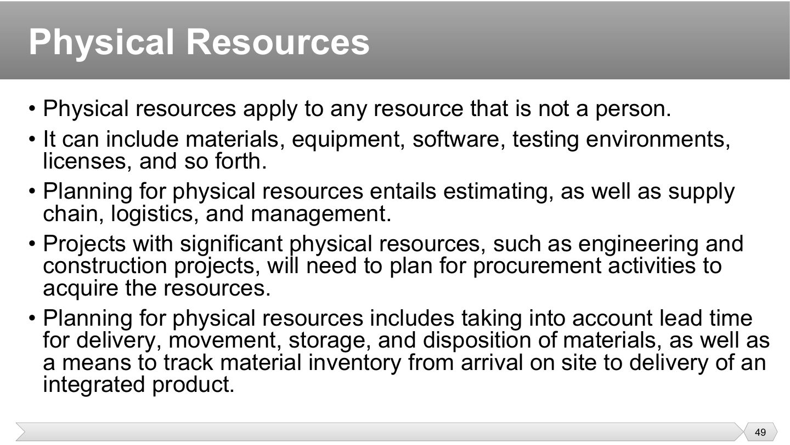
If it isn’t a person but the project needs it, count it here. Not a person covers more than you’d guess, including things you can’t touch.
Software teams often forget this applies to them. Testing environments and licenses cost money and take time to set up, and running out of them can stop work just as a missing machine would.
For physical items, knowing how many isn’t enough. Supply chain and logistics ask how they get here, who delivers them and where they’re stored, since a late shipment stops everyone waiting on it.
If you need steel or cranes, you must buy or rent them, and that takes contracts and time. So procurement becomes a major part of planning on such projects.
Lead time is the wait between ordering and receiving. If equipment takes 12 weeks, ordering late delays everything. Storage and disposal matter too, because materials need somewhere to go.
Which counts as a physical resource?
Planning for physical resources includes lead time for delivery.
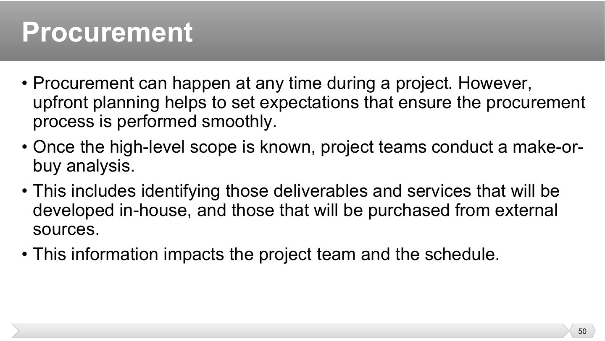
You can buy things at any point, but contracts take time and involve legal rules, so a late start can hold everyone up. Thinking ahead about procurement avoids surprises.
You need to know roughly what you’re building before you can decide which parts to buy. So the make-or-buy analysis starts once the high-level scope is clear, and before detailed planning.
Do we build the login system or buy one? Building needs people and time, while buying needs money and a contract. So this choice changes who is on the team and how long things take, which is why it affects the schedule.
Deciding which deliverables to develop in-house and which to purchase is called:
Plans say what should happen, delivery is what did happen, and measurement compares the two. Without that comparison, you can’t tell if you’re on track until it’s too late.
Metrics are the connection: the same measure you plan with (say, 20 items per sprint) is what you check during delivery.
A number alone doesn’t tell you whether to act. Thresholds give it meaning: agreeing in advance that “5% over budget is a warning, 10% is unacceptable” means nobody argues later about whether there’s a problem.
Measuring takes time away from doing the work. “Only measure what matters” means that if a number wouldn’t change any decision, you should stop collecting it.
Why does a team set thresholds when establishing metrics?
A team asks what it should measure. Which phrase should guide it?
The “checking outcomes” table: the left column is what success looks like for the domain, the right column is the evidence that it happened. You won’t be asked to reproduce it, but it is a good structure for a written answer about the domain. Planning: the project progresses in an organized way (checked against baselines), a holistic approach (schedule, budget and resources integrated), plans elaborated over time, planning effort appropriate to the situation, and plans that adapt.
Which evidence shows the project is progressing in an organized way?
The project work domain covers establishing processes, managing physical resources and fostering a learning environment.
Outcomes: efficient and effective performance, appropriate processes, good stakeholder communication, efficient management of physical resources and procurement, and improved capability through continuous learning.
Which belongs to the Project Work domain?
These are what a seller reads before replying. Clear bid documents mean offers you can compare fairly. Vague ones get you prices for different things.
If one vendor gets extra details, the process isn’t fair and the bids can’t be compared. A bidder conference gives every seller the same answers at the same time, before they write their offers.
If it can be written down and handed to someone, it’s explicit, like a setup guide. It’s easy to store and share, which also means it survives when people leave.
Tacit knowledge: personal and hard to articulate (beliefs, experience, insights), e.g. a senior developer’s instinct for which module will break. It is shared through mentoring, pairing and conversation.
An experienced developer’s instinct for which modules usually break under load is an example of:
Between planning and delivery comes the daily running of a project. This domain is about keeping work moving and removing distractions so that people can focus.
New requests keep arriving during a project. Without somewhere to put them, people get pulled in every direction. Managing the flow of work means deciding what gets done now and what waits.
A missing part or a slow contract can stall work just as surely as a software bug. So procurement and logistics aren’t side jobs here, and watching for changes means catching problems before they spread.
What one person learns is lost if it stays with them. Knowledge transfer means that when someone solves a hard problem or leaves, the team keeps what they learned.
Which activity is part of project work?
A process that worked in month one may not suit month six, once the team or the work has changed. That’s why it isn’t set once and forgotten: you review it periodically.
For example, review task boards for bottlenecks (work piling up in one column), whether work flows at the expected rate, and impediments blocking progress.
A review of the task board shows work piling up in one column. What has it found?
A process should fit the project, not the other way around. Process tailoring means removing steps that add nothing here and adding ones this project needs.
Failure costs more on some projects. A medical device needs heavy documentation because errors can hurt people, while a small internal tool doesn’t. So how critical a project is matters as much as its size.
These are all ways of asking “is this effort worth it?”. Lean removes steps that add no value, retrospectives find what to change, and the funding question stops you polishing something that’s already good enough.
Which project usually has the most process?
Which is a way of optimizing a process for its environment?
Waste is any effort that adds no value, such as three approvals when one would do. Reviewing processes finds these, and it’s often the cheapest way to speed up a project.
Every hour spent proving you followed the process is an hour not spent building. Checking conformance has a real cost, so more checking isn’t automatically better.
Too little review and you drift out of compliance. Too much and nothing gets built. Just enough means the amount that gets the benefit and satisfies governance, which is the same idea as tailoring.
The more time a team spends checking process conformance, the better the project’s outcome.
What should process reviews try to eliminate?
A constraint is a limit you can’t simply wish away. You’re working within them from the start, so a PM who doesn’t know what’s truly fixed can’t make good trade-offs.
Knowing which of these is fixed tells you where you have room. If the launch date is set by law, then scope or budget must flex instead. A fixed delivery date and a predetermined budget are the usual examples.
A budget approved in January may be cut in June. So balancing constraints isn’t a one-time decision, and you need to keep checking what’s still fixed.
New work needs more time and money, unless something else is removed. A new stakeholder requirement is a good test of whether a PM can explain the cost of saying yes.
…and a budget cut may relax a quality requirement or reduce scope. They are interrelated: change one, and the others move.
Define the term ‘project constraints’ and explain how they influence project planning and execution. Provide at least three examples of common constraints and discuss their interrelationship.
Project constraints are the limits a project must be delivered within. The classic three are scope, time and cost, often with quality, resources and risk. They drive planning because every schedule, budget and scope decision has to fit inside them, and during execution the PM keeps trading them off. They are interrelated (the triple constraint): cutting the schedule usually needs more cost or less scope, and adding scope needs more time or money; quality sits in the middle and suffers if they are squeezed.
Nothing stays balanced for long, since a new risk or a late supplier shifts things again. Balancing is ongoing work for the whole project, not a task done once in planning.
Don’t just bring problems to the sponsor, bring choices. “We can cut feature X or slip two weeks; here’s what each costs” lets them decide quickly. Presenting alternatives and their implications does that.
Not every trade-off needs a meeting with the sponsor. If it doesn’t affect what was promised, like swapping two tasks, the team’s authority covers it, and that keeps things moving.
A trade-off will change what the customer was promised. What should the PM do?
Balancing constraints is done once, during planning.
Few projects can do everything themselves. As soon as you buy, rent or hire from outside, legal commitments are involved, which is why contracting deserves its own attention.
Don’t just picture buying machines: hiring a consultant or a software company is also procurement. Materials, labor and services are all covered by the same rules.
A contract legally binds the organization, so the right to sign one is tightly limited. A PM who agrees terms with a vendor informally can create real legal problems, because they have no contracting authority.
The PM knows what’s needed, and the contracting officer knows the law. They rely on each other: one defines the work, and the other makes the agreement valid and safe.
A vendor offers a great price. Can the PM sign the contract?
Spending the organization’s money without controls invites fraud and legal disputes. Rigorous procurement policies spell out who may sign what, and up to what amount, so that no one is left guessing.
A lawyer can’t judge whether a technical requirement is right, and an engineer can’t judge a contract clause, so they write these together. The SOW matters most: if it’s vague, you get arguments about what was promised.
What does a statement of work (SOW) describe?
Who develops the RFP and other bid documents?
Sellers need a fair chance and buyers need comparable offers. So there’s a fixed order: publish what you want, answer questions equally, then choose. Skipping steps invites disputes about the bid process.
Use an RFI when you don’t yet know what’s possible. You’re researching rather than buying, so it commits you to nothing.
RFP (request for proposal): “how would you build it?”, used once the type of solution is chosen, to invite vendors to propose and bid.
RFQ (request for quote): “what’s your price?”, used for a known, specified item (500 laptops with exact specs).
A company needs 500 laptops with exact specifications and asks several vendors for their best price and delivery time. Which bid document does it issue?
Learning through the project is knowledge management: capturing and sharing what the team learns so it isn’t lost when people leave.
It covers both explicit knowledge (documents, lessons-learned registers) and tacit knowledge (shared through mentoring, pairing, communities of practice). The diagram shows explicit knowledge flowing through information management and tacit knowledge through people.
A senior developer’s instinct for which module will break is shared through pairing. What kind of knowledge is this?
The “checking outcomes” table: the left column is what success looks like for the domain, the right column is the evidence that it happened. You won’t be asked to reproduce it, but it is a good structure for a written answer about the domain. Project work: efficient performance (status reports show the work on track), appropriate processes, good communication, efficient physical resources and procurement, and improved capability through learning.
Which evidence supports “efficient and effective project performance”?
The delivery domain covers delivering the scope and quality the project was undertaken to achieve.
Outcomes: projects contribute to business objectives and strategy, realize the outcomes they were initiated for, realize benefits in the planned time, the team clearly understands the requirements, and stakeholders accept and are satisfied with the deliverables.
Which is a desired outcome of the Delivery domain?
“Done” means different things to different people. A developer may mean “it runs on my machine”, while a customer means “I can use it”. The definition of done removes the argument by listing what has to be true.
Quality is measured against what was required, not how impressive something is. A simple tool that does exactly what was asked is high quality, while a beautiful one that misses a requirement isn’t.
Cost of quality (COQ): all costs over the product’s life from prevention (training, standards), appraisal (testing, inspection) and failure (rework, warranty, lost customers). Chapter 7 develops it.
Which three kinds of cost make up the cost of quality?
If you ship in pieces, users benefit from the first piece right away, and it can start earning or saving money. With a single delivery at the end, the value only begins once the project is over.
The project team may have disbanded long ago while the product is still earning. So you can’t judge a project’s value on its closing day, and benefits may be measured for years after the project ends.
A business case answers “why is this worth doing?”, and it’s what you check later to see whether the value arrived. An adaptive project may use a lighter version, because the details are expected to change.
Why can a project with frequent releases deliver value during the project?
Business value can continue to be captured long after the project has ended.
Delivering every requested feature can still fail. A system with all its functions but which crashes under load isn’t a success, so more than scope has to be considered.
Scope is the list of things the customer gets. Ticking every item off the list tells you nothing about how well each one works.
Quality says how well: the performance levels that must be met (response time, reliability, accuracy).
A quality requirement only helps if the team can see it, so it needs writing down somewhere they use. Putting “loads in under 2 seconds” in the definition of done means it’s checked each time.
A website has every feature requested but takes a minute to load. What’s missing?
Where might quality requirements be recorded?
Quality work is often paid for before your project starts. Standards and quality procedures already exist, which means the sponsoring organization absorbs much of this cost.
Company-wide rules, such as “all code needs review”, express its quality policy. Your project inherits them, and you normally can’t opt out.
Your project benefits from training and audits without paying for them directly. That’s why the true cost of quality may be hidden from the project’s budget.
Perfect quality would cost a fortune and take forever, while no quality causes failure. The right level is where further spending is no longer worth it, which is why projects balance quality against cost.
A bug found in review costs little, while one found by customers can cost far more. The cost of quality idea is that money spent on prevention usually saves more than it costs.
Who usually bears much of the cost of training and process audits?
What is the idea behind the cost of quality?
Doing everything right doesn’t guarantee success, because projects create something new. So suboptimal outcomes aren’t proof of bad management, and the question is whether you limited the damage.
Here failure is expected and paid for, since the organization knows it’s buying a chance of a breakthrough. A drug company accepts many failures to find one medicine, so a fully experimental project needs judging differently.
A project can be delivered perfectly and still be too late. If a competitor launched first, the market opportunity may be gone. This is one more reason why speed of delivery has value.
You can reduce the chance and the cost of failure, but not remove them. Good project management spots trouble early and limits the damage, which is why exam answers saying it “eliminates” failure are wrong.
A company tests many compounds and most fail before one succeeds. How does the slide describe this?
Good project management can eliminate all negative outcomes.
The “checking outcomes” table: the left column is what success looks like for the domain, the right column is the evidence that it happened. You won’t be asked to reproduce it, but it is a good structure for a written answer about the domain. Delivery: contribution to strategy and business objectives (checked against the business case), outcomes realized, benefits realized on time (benefits realization plan), clear understanding of requirements, and stakeholder acceptance.
What is a benefits realization plan used to check?
The measurement domain covers assessing performance and taking action to keep it acceptable.
Outcomes: a reliable understanding of status, actionable data for decisions, timely actions to stay on track, and business value from informed, timely decisions based on reliable forecasts.
Which is a desired outcome of the Measurement domain?
“Progress is good” isn’t a metric. It becomes one when you state what you’re measuring and how: “percent of planned work finished”. That lets two people get the same answer.
You can’t say you’re behind without something to compare with. The baseline is the agreed plan, and it’s approved so that it can’t quietly be changed to make results look better.
A dashboard gives a quick view. Rather than reading a long report, someone can see in a glance what’s off track and then ask about it.
The approved version of a measure that actual results are compared against is called a:
Measuring tells you whether reality matches the plan while there’s still time to act. You can’t correct a budget overrun that you only find out about at the end.
Numbers keep things honest. Accountability is easier to show with a record of what was promised and delivered, and stakeholders get facts rather than reassurance.
A project can be on time and still heading for no benefit. Data also makes hard discussions easier: “we’ll miss this date, so which feature do we drop?” is better than opinions, and it helps focus conversations.
It’s far better to learn that a deliverable will fail before handing it over. Testing against customer acceptance criteria along the way avoids a nasty surprise at sign-off.
Which is a reason given for using measures?
A report nobody acts on is wasted work. The value comes when someone asks “this number looks bad, so what do we do?”. If no decision comes out of it, the measure isn’t helping.
Those conversations also expose bad measures. If people keep ignoring a number, it may be the wrong thing to track. So talking about data helps you measure the right things.
Slow decline is the hard kind to notice, since each week looks only slightly worse. Tracking over time reveals the trend, so you can act before performance deteriorates badly.
Where does the slide say the value of measurement lies?
A KPI is one of the few measures that really shows whether things are going well. Leading indicators are the valuable kind because they warn you early, like dark clouds before rain, while you can still act.
Why do these predict trouble? Lots of scope change requests suggest that requirements weren’t understood, so delays are likely to follow. An overloaded team will soon start missing dates, which is why team workload is worth watching now.
Lagging indicators report what already happened, like a final exam grade. They’re accurate and easy to measure, but it’s too late to change that result. You can only learn from them.
Cost variance can only be calculated after the money is spent, and satisfaction only after people use the product. So you need both: leading to steer and lagging to confirm. Leading looks ahead; lagging looks back.
Which of these is a leading indicator?
Measurement isn’t free, since every hour spent collecting data is an hour not spent building. So ask of each measure “what would we do differently if this changed?”, and if nothing, drop it.
Effective metrics are SMART: Specific, Meaningful, Achievable, Relevant, Timely. Note that in this slide the M is “meaningful”, not the usual “measurable”: a classic trap.
On this slide, what does the M in SMART stand for?
Why should teams only measure what is relevant?
There’s no universal set. A safety-critical system tracks defects closely, while a marketing campaign watches customer response. So start from what success means for this project and environment.
The categories ask different questions: is it good (deliverable), is it flowing (delivery), are we on plan (baseline), are we using things well (resources), is it worth it (business value), are people happy (stakeholders), where will we end up (forecasts)? Slides 80–81 give examples of each.
Which is NOT one of the common categories of metrics?
These judge the thing being built. A high count of defects warns of trouble even when the schedule looks fine, and technical performance checks things like speed against the target.
Delivery: work in progress, lead time (from identifying the need to delivering the result: the customer’s whole wait), cycle time (from starting the work to finishing it), process efficiency.
These compare reality to the approved plan. Schedule variance is the gap: a negative number means you’re behind, which tells you how far you’ve drifted and that you may need to act.
Lead time measures:
Schedule variance belongs to which category?
Comparing plan and actual reveals problems early. Using far more of a resource than planned hints that the estimate was wrong, and that the cost will overrun too.
These ask “is this worth the money?” in different ways. ROI compares gain to cost, while NPV also accounts for money later being worth less than money today. They’re what a sponsor cares about.
Unhappy people are an early warning sign. NPS asks how likely customers are to recommend you, while morale and turnover show the team’s health. Losing people is expensive and a sign something’s wrong.
Forecasts: estimate to complete (ETC: what is left), estimate at completion (EAC: the expected total), variance at completion (VAC = budget − EAC).
Net Promoter Score belongs to which category?
EAC is the:
An example dashboard for the stakeholder and team metrics of slide 81. Each row has a current value, a trend arrow, a target and a red/amber/green status. Stakeholder engagement: 82% active participation, rising, green.
NPS +45 against a target of >30 (green). Mood chart and morale (7.2/10 vs. >8) are amber.
Turnover 12% against a target of <10% is red: the item needing action. A dashboard’s job is exactly this, pointing attention at what is off track.
What does a red status on the dashboard tell you?
Dashboards: summary displays of the key measures, usually electronic (slide 84).
Information radiators: large, visible displays placed where everyone sees them without asking (slide 85).
Visual controls: task boards, burn charts and other charts that show the flow of work (slide 86).
A big burndown chart hangs where everyone on the team can see it. What is this?
A project dashboard template: project name, sponsor, PM, dates, overall status for schedule, resources and budget, then key activities with recent accomplishments, upcoming deliverables and a coloured status (concern, on track, issue). The legend at the bottom defines the colour codes.
What does a project dashboard usually do?
An information radiator is a big visible display, such as a burnup or burndown chart or a risk log, placed where the team works, so status is visible without asking anyone. (Also called a “big visible chart”.)
How can a burn chart help a project manager track progress and identify if the team is ahead or behind schedule?
A burndown chart plots the work remaining (e.g. story points) against time, next to an ideal line from the total down to zero at the end of the sprint. If the actual line is above the ideal line the team is behind; below it, ahead. A burnup chart shows completed work rising toward the scope line and also reveals scope changes. Either one gives an early warning, so the PM can act (remove blockers, re-prioritize, adjust scope) before the deadline.
Task boards make the flow of work visible: columns Ready → Develop and unit test → Dev-done → System test → Done, with work-in-progress limits (the boxed numbers).
Burn charts show work remaining (burndown) or completed (burnup) over time.
On the board: cycle time runs from when work starts on an item until it is complete; lead time runs from when the item is put on the board until it is delivered. Lead time is longer, because items wait in Ready and their order can change.
What does a burndown chart measure, and how are its two axes labeled in Agile project management?
It measures the work remaining against time, showing whether the team will finish on schedule. X-axis: time (days of the sprint, or sprints/iterations). Y-axis: work remaining (story points, hours or tasks).
The “checking outcomes” table: the left column is what success looks like for the domain, the right column is the evidence that it happened. You won’t be asked to reproduce it, but it is a good structure for a written answer about the domain. Measurement: a reliable understanding of status (audits of measures), actionable data (data shows whether to act), timely action (leading indicators prevent surprises) and business value from informed decisions.
Which evidence supports “timely actions”?
The uncertainty domain covers activities related to risk and uncertainty.
Outcomes: awareness of the environment (technical, social, political, market, economic), proactive exploration of and response to uncertainty, awareness of how variables depend on each other, anticipating threats and opportunities, delivery with little impact from surprises, and opportunities realized.
And cost and schedule reserves used effectively to stay aligned with the objectives.
Which is an outcome of the Uncertainty domain?
Uncertainty is the umbrella term, meaning you simply don’t know something, like whether a new technology will work. The other terms on this slide are different kinds of not knowing.
The key feature of ambiguity is unclarity rather than lack of data. Several answers seem possible and you can’t tell which is right, like not knowing which of multiple options fixes a bug.
Many parts affecting one another make results hard to predict. Complexity isn’t the same as being difficult: a hard math problem can be solved, while a system of people and interacting parts can surprise you.
Think of how volatility works in a market: a steel price jumping 30% in a month. You may understand it well, and it can still change without warning.
A risk is specific: “the vendor may deliver late”. It may happen or not. Exam trap: the definition includes positive effects, so a risk isn’t always bad.
“The possibility for rapid and unpredictable change” defines:
This slide steps back. Whenever you can’t say for sure what will happen or what’s true, that’s uncertainty, and the next three terms describe why.
Compare them by what’s unknown. Risk: a specific future event may happen. Ambiguity: you aren’t sure what the current situation means. Complexity: too many interacting parts to predict. Each one needs a different response, which is the reason to separate them.
“We can’t tell what this requirement really means right now.” Which nuance of uncertainty is this closest to?
Many surprises come from outside the project. You can’t respond to what you never looked at, so scanning the larger environment comes before responding.
Use it as a checklist when asked where uncertainty comes from. Economic: costs change. Technical: new technology may not work. Legal: the rules may change. Each is something the team doesn’t control but must plan for.
Political influences, inside or outside the organization. (A PESTLE-style checklist.)
A new law may change what the product must do. Which aspect of the environment is this?
Two people can read the same sentence differently and both feel sure. Conceptual ambiguity is fixed by defining terms: agree on what “done” or “on track” means before relying on the word. The slide’s schedule sentence shows how easily it happens.
Here the words are clear, but you can’t tell which path will turn out best. With situational ambiguity, the way forward is trying options on a small scale or making them comparable, rather than arguing.
Team members argue in a status meeting because they mean different things by “done”. Which kind of uncertainty is this?
This isn’t about the amount of work. A huge but predictable job can be merely large. Complexity comes from people and systems reacting in ways you can’t fully foresee.
Interconnected is the key word: change one thing and others respond, and those responses cause more change. Think of a new policy that makes one department’s work easier and creates a backlog in another.
What makes something complex, according to the slide?
The whole can behave differently from its parts. Each person can act sensibly and still produce a traffic jam. That’s what unintended outcomes means, and it’s why testing parts alone doesn’t guarantee the whole works.
This changes how you should act. Since you can’t predict results, a detailed long-term plan offers false confidence. Instead, try small steps, watch what happens and adjust.
Each family tackles it from another angle: systems-based changes the system itself, reframing changes how you look at it, and process-based changes how you work. Next three slides.
What is the effect of complexity on prediction?
If everything is connected, every change affects everything. Decoupling cuts those links so you can work on one piece safely. Software modules with clear interfaces are the familiar example, as you can change one without breaking the rest.
When you can’t test the real thing, learn from something similar. A simulation doesn’t have to use the same industry: an airport can learn from shopping malls how customers spend, at low cost and before anything’s built.
A team designing a new airport’s retail area studies shopping malls to predict consumer buying habits. Which complexity technique is this?
One person only sees part of a complex system. Diversity brings in other views to uncover what you’d miss. Starting broad and narrowing later keeps you from settling too soon on the first idea. Delphi-like processes then narrow things down.
Relying only on past data misses what’s coming, and relying only on forecasts ignores what really happened. Balance uses both, and the slide’s other point is like a hedge: elements that counteract each other limit the total damage.
A team brainstorms many views of a system, then uses a Delphi-like process to narrow them. What is this?
If you can’t predict the result, make small changes and watch. Iterating turns a big unknown into many small experiments, and each one tells you what to try next.
Assumptions are where complex projects go wrong. Asking stakeholders regularly replaces guesses with facts. Engaging them also means they’re less likely to be surprised, or to resist the final result.
Fail safe: for critical elements, build in redundancy or graceful degradation so a component failure doesn’t take the whole system down (a backup server).
Adding a backup server so a critical system keeps working in reduced form if its main server fails is which complexity technique?
Compare it with ambiguity. Volatility isn’t about being unclear: you may understand a market well, and prices can still jump next week.
It often comes from fluctuations in available skills or materials (a key specialist leaves; chip prices spike).
Sudden shortages and price jumps show up directly as more money or more waiting. So cost and schedule are where you plan protection, which is what the next slide covers.
A key specialist unexpectedly leaves, and chip prices jump. What is the project experiencing?
What does volatility usually affect?
You can’t stop the changes, so prepare for them with two tools: have other options ready and keep something in reserve. That’s why alternatives analysis and reserves go together.
If your one specialist leaves, what then? Alternatives analysis answers before it happens: train someone else, reorder the work, or outsource. Having options means a shock doesn’t stop you.
Prices may rise no matter what you do, so a cost reserve absorbs the jump without needing a new approval. Without it, every price change would become a crisis.
Prices rise and the budget runs short. Which response fits?
Which is an example of alternatives analysis?
Uncertainty is the broad state of not knowing. A risk is one specific thing you can name, assess and plan a response to, and that’s why it’s manageable.
Two parts make up the definition: it might not happen (uncertain), and if it does, an objective is affected. If it has already happened, it’s no longer a risk but an issue. Remember the effect can be positive.
Separate words help because you act in opposite ways: you try to stop threats from happening and try to make opportunities happen. Exam questions often turn on that difference.
Having never done this exact thing before means you can’t know everything in advance. So “no risks” in a plan means that nobody looked, and every project has them because each is unique.
A vendor might deliver late. It hasn’t happened yet. What is this?
All projects have risks.
Separate risks can each look fine while the project as a whole is shaky. Overall project risk looks at the total picture, and a very complex, unclear, fast-changing project is risky even if no single item stands out.
Same toolkit, larger scale. Rather than buying insurance for a single event, you might split a whole project into phases, or partner with another firm to share the project as a whole’s exposure.
If overall risk is too high, the organization may cancel the project: a legitimate outcome, not a failure of risk management.
Overall project risk is often a function of:
If overall risk is too high, what may the organization do?
A threat is still only a possibility. That’s why you have choices about it, including accepting it or preventing it, which you wouldn’t have once it has happened.
Avoid: eliminate the threat or protect the project from it (change the plan, drop the risky feature).
Escalate: the threat is outside the PM’s authority or scope, so pass it to the right level (program, portfolio, sponsor).
Transfer: shift ownership and impact to a third party (insurance, a fixed-price contract).
Mitigate: reduce the probability or impact (extra testing, a prototype).
Accept: acknowledge it without action, perhaps with a contingency reserve.
Buying insurance against a data-centre fire is which threat response strategy?
The table scores five risks each month (impact × probability = severity), and the threat profile chart stacks their severities over time. The total (dashed line) falls from about 26 in January to about 11 in April.
Some risks disappear as they are dealt with (permits obtained drops to 0 once permits are secured; “site not ready in time” too), while “pump capacity” stays. A falling profile is the evidence that risk responses are working.
What does a falling threat profile suggest?
Same event logic as a threat, but here you want it to happen. Since an opportunity can be missed, ignoring one has a cost too, so it deserves as much attention as a threat.
Finishing early sounds like simple luck, but a PM should plan for it. Under a time-and-materials contract, you pay for hours worked, so an early finish saves money directly, which can be reused elsewhere.
Exploit: act to make sure the opportunity happens (raise its probability to 100%).
Share: give part of the ownership to a third party better able to capture the benefit (a partnership).
The difference from exploit is the guarantee. Enhance improves the odds or the size, such as adding staff to raise the chance of finishing early, without promising it. Escalate and accept apply to opportunities too.
A team identifies a chance to finish early and takes action to ensure that the opportunity occurs. Which strategy is this?
A firm partners with another company so that both can capture a positive risk neither could capture alone. Which opportunity strategy is this?
Reserves are a planned cushion, not padding. Being explicit means people can see what’s there for risk and track how it’s used, instead of hiding extra days in every task.
You’ve named the risk and estimated the possible hit, so this is planned money. Since it’s tied to identified risks, it’s normally part of the cost baseline and the PM can use it.
Nobody can name these events yet, so you can’t assign the money to specific risks. Management reserve stays outside the baseline, and using it takes approval (see slide 47).
True or false: contingency reserve is set aside for unknown, unplanned events.
Risks change as a project moves, so a list written once goes stale. A regular cadence catches new ones, and more varied people mean more chance someone spots what others can’t see.
Nobody has to run a separate risk meeting for this. Daily stand-ups already ask what’s blocking people, which is where threats first appear, while they’re still small.
A small delay today can become a missed milestone if it continues. A blocker is a threat in its early form, so treat a repeat report as a warning, not just an update.
Good news deserves a follow-up too. If a team finds a faster method, could another team use it? A breakthrough is an opportunity only if someone notices and acts on it.
People react differently to something real than to a description. Showing a working piece early with a demonstration makes misunderstandings visible while they’re still cheap to fix.
A blocker keeps being reported at daily stand-up. What might it become?
A team finds a much faster testing method. What should it consider?
The “checking outcomes” table: the left column is what success looks like for the domain, the right column is the evidence that it happened. You won’t be asked to reproduce it, but it is a good structure for a written answer about the domain. Uncertainty: awareness of the environment (environmental factors considered in estimates and plans), proactive responses (risk register and responses kept current), awareness of interdependencies, anticipation of threats and opportunities, little impact from surprises, realized opportunities, and effective use of reserves.
Which evidence supports “proactive responses” in the Uncertainty domain?